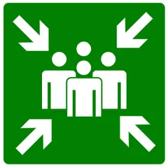
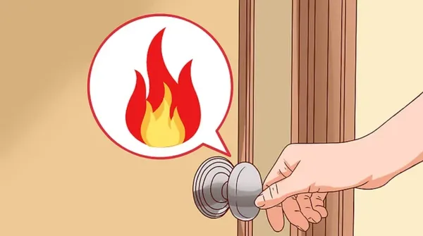
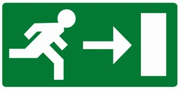
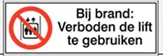
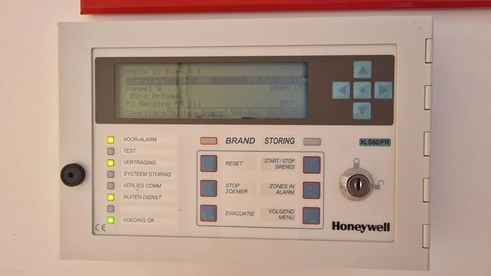
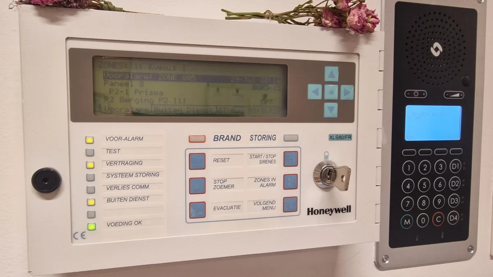
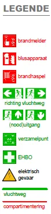
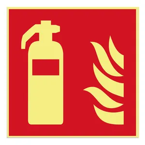
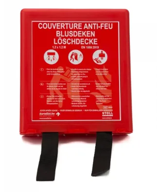
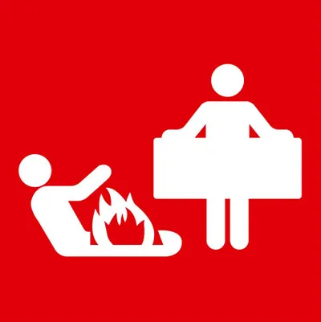

<!doctype html>
<html lang="nl"><head><meta charset="utf-8">
<meta name="viewport" content="width=device-width,initial-scale=1,viewport-fit=cover">
<title>Opleiding Brandveiligheid</title>
<meta name="theme-color" content="#b3121b">
<link rel="icon" href="favicon.svg" type="image/svg+xml">
<meta name="robots" content="noindex">
<style>:root{color-scheme:light;box-sizing:border-box;padding-top:env(safe-area-inset-top,0px);padding-bottom:env(safe-area-inset-bottom,0px)}html{scroll-padding-top:env(safe-area-inset-top,0px)}body{margin:0;padding:0;font:14px -apple-system,BlinkMacSystemFont,sans-serif;background:#fff;color:#000}img{max-width:100%}[hidden]:not([hidden=until-found i]){display:none!important}</style>
</head><body>
<link rel="preconnect" href="https://fonts.googleapis.com">
<link rel="stylesheet" href="https://fonts.googleapis.com/css2?family=Atkinson+Hyperlegible:wght@400;700&family=Barlow+Semi+Condensed:wght@600;700&display=swap">
<style id="main-css">
/* Layout: app shell. Phone = header + scrolling content + bottom tab bar. PC = sidebar nav + content column. */
:root{
  --bg:#f6f4f3; --surface:#ffffff; --fg:#1d1a1a; --muted:#6b6262; --line:#e4dedc;
  --red:#b3121b; --red-soft:#fbe9e8; --on-red:#ffffff;
  --green:#0a7d3e; --green-soft:#e5f3ea;
  --amber:#8a5a00; --amber-soft:#fff3d6;
  --scope-all:#4b5563; --scope-site:#7a3e8f; --scope-ward:#b3121b;
  --font-display:"Barlow Semi Condensed","Arial Narrow",system-ui,sans-serif;
  --font-body:"Atkinson Hyperlegible",system-ui,-apple-system,"Segoe UI",sans-serif;
  --r:12px;
}
@media (prefers-color-scheme: dark){:root:not([data-theme="light"]){
  --bg:#151213; --surface:#1f1b1c; --fg:#f1ecea; --muted:#a89e9c; --line:#352f30;
  --red:#e2454c; --red-soft:#3a1a1c; --on-red:#ffffff;
  --green:#3fbf76; --green-soft:#16301f; --amber:#f0c060; --amber-soft:#3a2e12;
  --scope-all:#a3acb9; --scope-site:#c48fd6; --scope-ward:#ff7a80; color-scheme:dark}}
:root[data-theme="dark"]{
  --bg:#151213; --surface:#1f1b1c; --fg:#f1ecea; --muted:#a89e9c; --line:#352f30;
  --red:#e2454c; --red-soft:#3a1a1c; --on-red:#ffffff;
  --green:#3fbf76; --green-soft:#16301f; --amber:#f0c060; --amber-soft:#3a2e12;
  --scope-all:#a3acb9; --scope-site:#c48fd6; --scope-ward:#ff7a80; color-scheme:dark}
*{box-sizing:border-box}
html,body{height:100%}
body{background:var(--bg);color:var(--fg);font-family:var(--font-body);font-size:16px;line-height:1.5}
h1,h2,h3{font-family:var(--font-display);text-wrap:balance;line-height:1.15;margin:0}
h1{font-size:1.75rem} h2{font-size:1.35rem} h3{font-size:1.1rem}
p{margin:0}
button{font:inherit;color:inherit}
:focus-visible{outline:3px solid var(--red);outline-offset:2px;border-radius:6px}
img{display:block;max-width:100%}

/* header */
.top{position:sticky;top:env(safe-area-inset-top,0px);z-index:20;background:var(--red);color:var(--on-red);padding:10px 16px 12px}
.top-in{max-width:1100px;margin:0 auto;display:flex;align-items:center;gap:12px}
.logo{width:34px;height:34px;border-radius:8px;background:var(--on-red);color:#b3121b;display:grid;place-items:center;font-family:var(--font-display);font-weight:700;font-size:1.3rem;flex:none}
.where{flex:1;min-width:0;text-align:left;background:none;border:0;padding:4px 0;cursor:pointer}
.where small{display:block;white-space:nowrap;overflow:hidden;text-overflow:ellipsis;font-size:.78rem;opacity:.85;letter-spacing:.04em;text-transform:uppercase}
.where b{font-family:var(--font-display);font-size:1.2rem;display:flex;align-items:center;gap:6px;white-space:nowrap;overflow:hidden;text-overflow:ellipsis}
.where b::after{content:"";width:8px;height:8px;border-right:2px solid currentColor;border-bottom:2px solid currentColor;transform:rotate(45deg) translateY(-3px);flex:none}
.sos{flex:none;background:var(--on-red);color:#b3121b;border:0;border-radius:999px;padding:8px 14px;font-weight:700;cursor:pointer}

/* shell */
.shell{max-width:1100px;margin:0 auto;display:flex;gap:28px;padding-inline:16px;padding-block:20px 110px}
.side{display:none}
main{flex:1;min-width:0;display:flex;flex-direction:column;gap:18px}
.tabbar{position:fixed;left:0;right:0;bottom:0;z-index:20;background:var(--surface);border-top:1px solid var(--line);display:grid;grid-template-columns:repeat(5,1fr);padding:6px 4px calc(6px + env(safe-area-inset-bottom,0px))}
.tab{background:none;border:0;display:flex;flex-direction:column;align-items:center;gap:2px;font-size:.72rem;color:var(--muted);padding:6px 2px;cursor:pointer;border-radius:8px}
.tab svg{width:24px;height:24px}
.tab[aria-current="page"]{color:var(--red);font-weight:700}
@media (min-width:900px){
  .tabbar{display:none}
  .shell{padding-block:28px 48px}
  .side{display:flex;flex-direction:column;gap:4px;width:220px;flex:none;position:sticky;top:90px;align-self:flex-start}
  .side .tab{flex-direction:row;gap:12px;font-size:1rem;padding:10px 12px;justify-content:flex-start}
  .side .tab[aria-current="page"]{background:var(--red-soft)}
  .side .legend{margin-top:20px}
}

/* blocks */
.view{display:flex;flex-direction:column;gap:18px}
.view-head{display:flex;flex-direction:column;gap:6px}
.view-head p{color:var(--muted);max-width:62ch}
.card{background:var(--surface);border:1px solid var(--line);border-radius:var(--r);padding:16px;display:flex;flex-direction:column;gap:12px;min-width:0}
.card-head{display:flex;justify-content:space-between;align-items:flex-start;gap:10px;flex-wrap:wrap}
.scope{display:inline-block;flex:0 0 auto;align-self:flex-start;line-height:1.3;font-size:.7rem;font-weight:700;letter-spacing:.06em;text-transform:uppercase;padding:3px 8px;border-radius:999px;border:1.5px solid currentColor;white-space:nowrap}
.scope{display:none}.editmode .scope{display:inline-block}
.scope.all{color:var(--scope-all)} .scope.site{color:var(--scope-site)} .scope.ward{color:var(--scope-ward)}
.grid2{display:grid;gap:18px;grid-template-columns:1fr}
@media (min-width:700px){.grid2{grid-template-columns:1fr 1fr}}
ul.plain{margin:0;padding-left:1.2em;display:flex;flex-direction:column;gap:6px}
.muted{color:var(--muted)}

/* emergency */
.numbers{display:grid;grid-template-columns:1fr 1fr;gap:12px}
.num{background:var(--red);color:var(--on-red);border-radius:var(--r);padding:14px 16px;display:flex;flex-direction:column;gap:2px}
.num b{font-family:var(--font-display);font-size:2.6rem;line-height:1;font-variant-numeric:tabular-nums;user-select:all}
.num span{font-size:.9rem;opacity:.95}
.num.alt{background:var(--surface);color:var(--fg);border:2px solid var(--red)}
.num.alt b{color:var(--red)}
.num.acc{grid-column:1/-1;background:var(--surface);color:var(--fg);border:2px solid var(--green)}.num.acc b{color:var(--green)}
@media (min-width:700px){.numbers{grid-template-columns:repeat(auto-fit,minmax(0,1fr))}.num.acc{grid-column:auto}}
.alerts{display:flex;flex-direction:column;gap:8px}
.alert{display:flex;gap:10px;align-items:flex-start;background:var(--amber-soft);color:var(--fg);border-radius:10px;padding:10px 12px}
.alert i{font-style:normal;font-weight:700;color:var(--amber);flex:none;width:20px;text-align:center}
.steps{list-style:none;margin:0;padding:0;display:flex;flex-direction:column;gap:10px;counter-reset:s}
.step{background:var(--surface);border:1px solid var(--line);border-radius:var(--r);overflow:hidden}
.step>button{width:100%;display:flex;gap:14px;align-items:center;background:none;border:0;padding:14px 16px;text-align:left;cursor:pointer}
.step>button::before{counter-increment:s;content:counter(s);flex:none;width:34px;height:34px;border-radius:50%;background:var(--red);color:var(--on-red);display:grid;place-items:center;font-family:var(--font-display);font-weight:700;font-size:1.15rem}
.step-t{flex:1;min-width:0}
.step-t b{display:block;font-family:var(--font-display);font-size:1.15rem}
.step-t span{color:var(--muted);font-size:.9rem}
.chev{width:10px;height:10px;border-right:2px solid var(--muted);border-bottom:2px solid var(--muted);transform:rotate(45deg);transition:transform .2s;flex:none}
.step.open .chev{transform:rotate(-135deg)}
.step-body{padding:0 16px 16px 64px;display:flex;flex-direction:column;gap:10px}
@media (max-width:420px){.step-body{padding-left:16px}}
.hl{color:var(--red);font-weight:700}
.signs{display:flex;gap:10px;flex-wrap:wrap;align-items:center}
.signs img{height:44px;width:auto;border-radius:4px}
.assembly{display:flex;gap:14px;align-items:center;background:var(--green-soft);border-radius:var(--r);padding:12px 14px}
.assembly img{width:56px;height:56px;border-radius:6px;flex:none}
.assembly small{display:block;color:var(--green);font-weight:700;text-transform:uppercase;letter-spacing:.06em;font-size:.72rem}
.assembly b{font-family:var(--font-display);font-size:1.25rem}

/* centrales */
.photo{position:relative;border-radius:10px;overflow:hidden;background:var(--line)}
.photo img{width:100%;aspect-ratio:16/9;object-fit:cover}
.pin{position:absolute;display:flex;align-items:center;gap:6px;transform:translate(-50%,-50%)}
.editing .pin{cursor:grab;touch-action:none}.editing .pin span{outline:2px dashed #fff;outline-offset:2px}
.pin span{width:26px;height:26px;border-radius:50%;background:var(--red);color:#fff;border:2px solid #fff;display:grid;place-items:center;font-weight:700;font-size:.8rem;box-shadow:0 1px 4px rgba(0,0,0,.4)}
.keylist{list-style:none;margin:0;padding:0;display:flex;flex-direction:column;gap:8px}
.keylist li{display:flex;gap:10px;align-items:flex-start}
.keylist li>span{flex:none;width:24px;height:24px;border-radius:50%;background:var(--red);color:var(--on-red);display:grid;place-items:center;font-weight:700;font-size:.8rem}
.todo{border:2px dashed var(--amber);background:var(--amber-soft);border-radius:10px;padding:10px 12px}
.todo b{color:var(--amber)}
.filled{padding:2px 0}

/* plans */
.seg{display:inline-flex;flex-wrap:wrap;background:var(--line);border-radius:999px;padding:3px;gap:2px;align-self:flex-start}
.seg button{border:0;background:none;padding:7px 12px;white-space:nowrap;border-radius:999px;cursor:pointer;font-weight:700;font-variant-numeric:tabular-nums}
.seg button[aria-pressed="true"]{background:var(--surface);color:var(--red);box-shadow:0 1px 3px rgba(0,0,0,.15)}
.plan{border-radius:10px;border:1px solid var(--line);background:#fff;overflow:auto;max-height:70vh}
.plan img{max-width:none;width:100%;transition:width .2s}
.plan.z2,.plan.z3{cursor:grab}.plan.panning{cursor:grabbing;user-select:none}.plan img{-webkit-user-drag:none;user-select:none}
.plan.z2 img{width:200%} .plan.z3 img{width:320%}
.zoom{display:flex;gap:8px;align-items:center;flex-wrap:wrap}
.zoom button{border:1px solid var(--line);background:var(--surface);border-radius:8px;padding:6px 12px;cursor:pointer}
.legend-row{display:flex;gap:12px;align-items:flex-start}
.legend-row img{width:88px;flex:none;background:#fff;border-radius:6px}

/* blussen */
.classes{display:grid;grid-template-columns:repeat(auto-fill,minmax(150px,1fr));gap:10px}
.cls{display:flex;gap:10px;align-items:flex-start;background:var(--bg);border-radius:10px;padding:10px}
.cls img{width:44px;height:44px;flex:none;border-radius:4px}
.cls p{font-size:.88rem}
.cls b{display:block}
.ext{display:flex;gap:14px;align-items:flex-start}
.ext img{width:64px;flex:none;border-radius:6px}
.facts{display:flex;flex-wrap:wrap;gap:8px}
.fact{background:var(--bg);border-radius:8px;padding:6px 10px;font-size:.88rem}
.fact b{font-variant-numeric:tabular-nums}
.pairs{display:flex;flex-direction:column;gap:12px}
.pair{display:grid;grid-template-columns:1fr 1fr;gap:10px}
.pair figure{margin:0;border-radius:10px;overflow:hidden;border:2px solid var(--line);background:#fff;display:flex;flex-direction:column}
.pair figure img{width:100%;aspect-ratio:3/1.15;object-fit:contain;padding:6px}
.pair figcaption{padding:8px 10px;font-size:.85rem;background:var(--surface);color:var(--fg);flex:1;display:flex;gap:6px}
.pair .no{border-color:var(--red)} .pair .no figcaption i{color:var(--red)}
.pair .yes{border-color:var(--green)} .pair .yes figcaption i{color:var(--green)}
.pair i{font-style:normal;font-weight:700}
.chips{display:flex;gap:8px;flex-wrap:wrap}
.chip{border:1px solid var(--line);background:var(--surface);border-radius:999px;padding:6px 12px;cursor:pointer;font-size:.9rem}
.chip[aria-pressed="true"]{background:var(--fg);color:var(--bg);border-color:var(--fg)}

/* quiz */
.q{display:flex;flex-direction:column;gap:8px}
.opt{text-align:left;border:1.5px solid var(--line);background:var(--surface);border-radius:10px;padding:10px 12px;cursor:pointer}
.opt.ok{border-color:var(--green);background:var(--green-soft)}
.opt.bad{border-color:var(--red);background:var(--red-soft)}
.progress{height:8px;background:var(--line);border-radius:999px;overflow:hidden}
.progress span{display:block;height:100%;background:var(--green);transition:width .3s}

/* language bar */
.langbar{max-width:1100px;margin:8px auto 0;display:flex;gap:6px}
.langbar button{background:transparent;border:1.5px solid rgba(255,255,255,.7);color:var(--on-red);border-radius:999px;padding:3px 14px;font-weight:700;cursor:pointer}
.langbar button[aria-pressed="true"]{background:var(--on-red);color:#b3121b;border-color:var(--on-red)}
.homebody .langbar{display:none!important}
/* start screens */
.homebody .tabbar,.homebody .side,.homebody #editBtn,.homebody #sosBtn{display:none!important}
.homebody .where b::after{display:none}
.picks{display:flex;flex-direction:column;gap:10px;max-width:640px}
.pick{display:flex;align-items:center;gap:14px;width:100%;text-align:left;background:var(--surface);border:1px solid var(--line);border-radius:var(--r);padding:16px;cursor:pointer}
.pick:hover{border-color:var(--red)}
.pick span{flex:1;min-width:0;display:flex;flex-direction:column;gap:2px}
.pick b{font-family:var(--font-display);font-size:1.2rem}
.pick small{color:var(--muted);font-size:.9rem}
.pick::after{content:"";width:9px;height:9px;border-right:2.5px solid var(--red);border-top:2.5px solid var(--red);transform:rotate(45deg);flex:none}
.pick:disabled{cursor:default;opacity:.65}.pick:disabled::after{display:none}
.pick[aria-current="true"]{border-color:var(--red);box-shadow:inset 4px 0 0 var(--red)}
.back{align-self:flex-start;background:none;border:0;color:var(--red);font-weight:700;padding:4px 0;cursor:pointer}
/* sheet */
.sheet-bg{position:fixed;inset:0;background:rgba(0,0,0,.45);z-index:40;display:flex;align-items:flex-end;justify-content:center}
.sheet{background:var(--surface);width:100%;max-width:520px;border-radius:16px 16px 0 0;padding:18px 16px calc(20px + env(safe-area-inset-bottom,0px));max-height:85vh;overflow:auto;display:flex;flex-direction:column;gap:12px}
@media (min-width:600px){.sheet-bg{align-items:center}.sheet{border-radius:16px}}
.site{flex:none;border:1px solid var(--line);border-radius:10px;overflow:hidden}
.site>div{padding:10px 12px;font-weight:700;display:flex;justify-content:space-between;gap:8px;background:var(--bg)}
.ward-opt{display:flex;justify-content:space-between;gap:8px;width:100%;border:0;border-top:1px solid var(--line);background:var(--surface);padding:10px 12px;text-align:left;cursor:pointer}
.ward-opt[aria-current="true"]{color:var(--red);font-weight:700}
.ward-opt:disabled{color:var(--muted);cursor:default}
.legend{font-size:.8rem;color:var(--muted);display:flex;flex-direction:column;gap:6px}
.legend div{display:flex;gap:8px;align-items:center}
/* edit mode */
.editbtn{display:flex;align-items:center;gap:6px;flex:none;background:none;color:var(--on-red);border:1.5px solid currentColor;border-radius:999px;padding:7px 12px;font-weight:700;cursor:pointer}
.editbar{position:sticky;top:calc(env(safe-area-inset-top,0px) + 64px);z-index:15;background:var(--fg);color:var(--bg);border-radius:var(--r);padding:10px 12px;display:flex;flex-wrap:wrap;gap:8px 12px;align-items:center}
.editbar p{flex:1 1 220px;font-size:.9rem}
.editbar button{border:0;border-radius:999px;padding:8px 14px;font-weight:700;cursor:pointer}
.editbar .save{background:var(--red);color:var(--on-red)}
.editbar .cancel{background:transparent;color:var(--bg);border:1.5px solid currentColor}
.editbar .msg{flex-basis:100%;font-size:.85rem}
[contenteditable="true"]{outline:1.5px dashed var(--muted);outline-offset:3px;border-radius:4px;cursor:text}
[contenteditable="true"]:focus{outline:2px solid var(--red);background:var(--red-soft)}
.edited{box-shadow:inset 3px 0 0 var(--amber)}
.stamp{font-size:.8rem;color:var(--muted)}
.step>.step-h{width:100%;display:flex;gap:14px;align-items:center;padding:14px 16px}
.step>.step-h::before{counter-increment:s;content:counter(s);flex:none;width:34px;height:34px;border-radius:50%;background:var(--red);color:var(--on-red);display:grid;place-items:center;font-family:var(--font-display);font-weight:700;font-size:1.15rem}
@media (max-width:480px){.editbtn{padding:7px 9px}.editbtn span{display:none}.where b{font-size:1.05rem}}
@media (prefers-reduced-motion:reduce){*{transition:none!important}}
</style>

<div id="app"></div>
<script type="application/json" id="edits">{"edits":{"jeugd/brand/-/7":"Bel je eens je in veiligheid bent","jeugd/brand/-/30":"Sluit alle ramen. Branddeuren vallen automatisch dicht bij brandalarm; is er een deur niet dichtgegaan, sluit ze alsnog. Een branddeur geeft je een half uur extra tijd.","jeugd/afd/-/11":"Verpleegpost, eerste verdieping","jeugd/afd/-/12":"\u003cb>De sleutel van de brandcentrale beneden hangt in de vergaderzaal.\u003c/b>","jeugd/pin/1":"19.7,58.6","jeugd/pin/2":"19.8,71.3","jeugd/pin/3":"39.3,59.5","jeugd/pin/4":"39.3,77.4","jeugd/pin/5":"69.7,67.2","onderhoud/brand/-/13":"\u003cbr>"},"savedAt":"2026-10-13T07:24:03.927Z"}</script>

<script id="main-js">
// Content model: every block has a scope. "all" = shared by the 5 sites, "site" = one site, "ward" = one afdeling.
const SHELL=`<header class="top">
  <div class="top-in">
    <div class="logo" aria-hidden="true"><svg viewBox="0 0 24 24" width="28" height="28" fill="none" stroke="currentColor" stroke-width="1.8" stroke-linecap="round" stroke-linejoin="round"><rect x="7" y="8.5" width="8.5" height="13" rx="3.2" fill="currentColor"/><path d="M9.2 8.5V5.5h4v3"/><path d="M13.2 5.5h4.8l1.6 2.2"/><path d="M8.6 3.5h5.2"/><path d="M8.5 14h5.5" stroke="#fff"/></svg></div>
    <button class="where" id="whereBtn" aria-label="Site of afdeling wijzigen">
      <small id="whereSite">Psychiatrisch ziekenhuis</small>
      <b id="whereWard">Jeugdpsychiatrie</b>
    </button>
    <button class="editbtn" id="editBtn" hidden aria-label="Bewerken"><svg viewBox="0 0 24 24" width="18" height="18" fill="none" stroke="currentColor" stroke-width="2" stroke-linecap="round" stroke-linejoin="round" aria-hidden="true"><path d="M4 20h4L19 9l-4-4L4 16z"/></svg><span>Bewerken</span></button>
    <button class="sos" id="sosBtn">Bij brand</button>
  </div>
  <div class="langbar" id="langbar" role="group" aria-label="Taal / Langue / Language" hidden></div>
</header>

<div class="shell">
  <nav class="side" id="side" aria-label="Hoofdmenu"></nav>
  <main id="main"></main>
</div>
<nav class="tabbar" id="tabbar" aria-label="Hoofdmenu"></nav>
<div id="sheetHost"></div>`;
document.getElementById('app').innerHTML=SHELL;
let SAVED={edits:{},savedAt:null};
try{SAVED=Object.assign(SAVED,JSON.parse(document.getElementById('edits').textContent))}catch(e){}
// Ward data: everything that differs per afdeling lives here; shared text lives in the views below.
const EQUIP_STD=[
  '<b>Branddeken:</b> aanwezig in de keuken.',
  '<b>Bio-schuimblussers:</b> aanwezig op elke gang. Te herkennen aan het groene handvat.',
  '<b>CO² blussers:</b> aanwezig in de technische ruimtes. Te herkennen aan de bredere bek om mee te blussen.',
  '<b>Brandhaspels:</b> aanwezig op elke gang.',
  '<b>Brandcentrale:</b> de dichtstbijzijnde is de brandcentrale op de verpleegpost.',
  '<b>Handbrandmelders:</b> aanwezig in alle gangen. Ze bevinden zich nooit op een kamer of in een ruimte.',
  '<b>Rookmelders:</b> aanwezig op alle gangen en in alle kamers en ruimtes.'];
const LEG='Brandblusser (schuimblusser of CO²), brandhaspel, branddeken, handbrandmelder';
// Verzamelplaats voor alle afdelingen van het PZ (beslist door Johan, 13/10/2026).
const PZ_VERZAMEL='Parking aan de afdeling algemene psychiatrie';
const WARDS={
 jeugd:{site:'pz',name:'Jeugdpsychiatrie',label:'Afdeling jeugdpsychiatrie',afd:'jeugd',verzamel:PZ_VERZAMEL,shelter:1,bluspoging:1,olie:1,
  alerts:['<b>Handdrukmelders zijn gedeactiveerd op de volledige eerste verdieping.</b> Op het gelijkvloers werken ze wel.','Melding via de rookdetector heeft <b>3 minuten vertraging</b>.','Met je <b>badge</b> ontgrendel je de nooduitgangen onmiddellijk.'],
  plans:[{l:'00',hq:1,views:['img/jeugd-hq-00a.webp','img/jeugd-hq-00b.webp']},{l:'01',hq:1,views:['img/jeugd-hq-01a.webp','img/jeugd-hq-01b.webp','img/jeugd-hq-01c.webp'],note:'Het groene vluchtpictogram met kader op het plan: enkel gebruiken <b>als er geen andere uitweg mogelijk is</b>.'}]},
 eetherstel:{site:'pz',name:'Eetherstel',label:'Afdeling eetherstel',afd:'equip',verzamel:PZ_VERZAMEL,shelter:1,bluspoging:1,olie:1,equip:EQUIP_STD,
  alerts:['De dichtstbijzijnde <b>brandcentrale</b> staat op de verpleegpost.','<b>Handbrandmelders</b> hangen in alle gangen, nooit op een kamer.'],
  plans:[{l:'00',hq:1,views:['img/eetherstel-hq-00a.webp','img/eetherstel-hq-00b.webp','img/eetherstel-hq-00c.webp']},{l:'01',hq:1,views:['img/eetherstel-hq-01a.webp','img/eetherstel-hq-01b.webp']},{l:'02',hq:1,views:['img/eetherstel-hq-02a.webp','img/eetherstel-hq-02b.webp']},{l:'03',hq:1,views:['img/eetherstel-hq-03a.webp'],note:'Niveau 03 is de machinekamer van de lift.'}]},
 hestia:{site:'pz',name:'Mobiel team Hestia',label:'Mobiel team Hestia',afd:'hestia',verzamel:PZ_VERZAMEL,shelter:1,bluspoging:1,olie:1,
  alerts:['Je werkt als mobiel team in verschillende huizen. <b>Alle huizen van Hestia hebben bio-schuimblussers.</b>'],
  plans:[{l:'-01',img:'img/hestia-planm01.webp'},{l:'00',img:'img/hestia-plan00.webp'},{l:'01',img:'img/hestia-plan01.webp'}]},
 ouderen:{site:'pz',name:'Ouderenpsychiatrie',label:'Afdeling ouderenpsychiatrie',afd:'equip',verzamel:PZ_VERZAMEL,shelter:1,bluspoging:1,olie:1,equip:EQUIP_STD,
  alerts:['De dichtstbijzijnde <b>brandcentrale</b> staat op de verpleegpost.','Op het plan van niveau 00 staan de <b>evacuatie-sleutelcontacten</b> aangeduid.'],
  plans:[{l:'00',img:'img/ouderen-plan00.webp',leg:'Brandblusser (bio-schuim of CO² (TED)), brandhaspel, branddeken, handbrandmelder, brandmeldingscentrale (BMC), evacuatie-sleutelcontact'},{l:'01',img:'img/ouderen-plan01.webp',note:'Op dit plan is ook het <b>tussenverdiep</b> aangeduid.'},{l:'02',img:'img/ouderen-plan02.webp'}]},
 verslaving:{site:'pz',name:'Verslavingszorg',label:'Afdeling verslavingszorg',afd:'equip',verzamel:PZ_VERZAMEL,shelter:1,bluspoging:1,olie:1,
  equip:['<b>Branddeken:</b> aanwezig in de keukens van de afdeling.',EQUIP_STD[1],EQUIP_STD[2],EQUIP_STD[3],'<b>Brandcentrale:</b> op TED niveau 00.','<b>Handbrandmelders:</b> aanwezig in alle gangen. Ze bevinden zich nooit op een kamer of in een ruimte, met uitzondering van het ergo-lokaal op niveau 00.',EQUIP_STD[6]],
  alerts:['De <b>brandcentrale</b> staat op TED niveau 00.','In het <b>ergo-lokaal</b> op niveau 00 hangt een handbrandmelder in de ruimte zelf.','Op de plannen staan de <b>evacuatieschakelaars</b> aangeduid.'],
  plans:[{l:'00',img:'img/verslaving-plan00.webp',leg:LEG+', brandmeldingscentrale (BMC), evacuatieschakelaar'},{l:'01',img:'img/verslaving-plan01.webp',leg:LEG+', evacuatieschakelaar'},{l:'02',img:'img/verslaving-plan02.webp',leg:LEG+', evacuatieschakelaar'}]},

 onderhoud:{site:'pz',name:'Onderhoud',label:'Onderhoud',afd:'onderhoud',verzamel:PZ_VERZAMEL,shelter:1,bluspoging:1,olie:1,langs:['nl','fr','en'],
  names:{nl:'Onderhoud',fr:'Service d’entretien',en:'Maintenance'},
  verzamelL:{fr:'Parking du service de psychiatrie générale',en:'Car park at the general psychiatry department'},
  alerts:['Je werkt op <b>alle afdelingen</b>. Zorg dat je op elke werkplek weet waar de blusmiddelen, de handbrandmelders en de brandcentrale zijn.','<b>Handbrandmelders</b> hangen ook in de technische ruimtes.'],
  alertsL:{fr:['Vous travaillez dans <b>tous les services</b>. Sur chaque lieu de travail, sachez où se trouvent les moyens d’extinction, les points d’appel manuels et le panneau d’incendie.','Des <b>points d’appel manuels</b> se trouvent aussi dans les locaux techniques.'],
   en:['You work in <b>every department</b>. At each workplace, know where the extinguishers, manual call points and fire panel are.','<b>Manual call points</b> are also located in technical rooms.']},
  equip:['<b>Branddekens:</b> aanwezig in alle keukens.','<b>Bio-schuimblussers:</b> op elke gang, op gesloten afdelingen soms in een gesloten kast. Te herkennen aan het groene handvat of de indrukknop.','<b>CO² blussers:</b> in de technische ruimtes en soms in keukens. Te herkennen aan de bredere bek om mee te blussen.','<b>Brandhaspels:</b> op elke gang.','<b>Brandcentrales:</b> meestal op de verpleegpost.','<b>Handbrandmelders:</b> in alle gangen, nooit op een patiëntenkamer. Ook in de technische ruimtes.','<b>Rookmelders:</b> op alle gangen en in alle kamers en ruimtes.'],
  equipL:{fr:['<b>Couvertures anti-feu :</b> dans toutes les cuisines.','<b>Extincteurs à biomousse :</b> dans chaque couloir, parfois dans une armoire fermée dans les services fermés. Reconnaissables à la poignée verte ou au bouton à presser.','<b>Extincteurs au CO² :</b> dans les locaux techniques et parfois dans les cuisines. Reconnaissables à la buse plus large.','<b>Dévidoirs d’incendie :</b> dans chaque couloir.','<b>Panneaux d’alarme incendie :</b> le plus souvent au poste des infirmiers.','<b>Points d’appel manuels :</b> dans tous les couloirs, jamais dans une chambre de patient. Aussi dans les locaux techniques.','<b>Détecteurs de fumée :</b> dans tous les couloirs, chambres et espaces.'],
   en:['<b>Fire blankets:</b> in all kitchens.','<b>Bio-foam extinguishers:</b> in every corridor, on closed wards sometimes in a locked cabinet. Recognisable by the green handle or the push button.','<b>CO² extinguishers:</b> in technical rooms and sometimes in kitchens. Recognisable by the wider nozzle.','<b>Fire hoses:</b> in every corridor.','<b>Fire alarm panels:</b> mostly at the nurses’ station.','<b>Manual call points:</b> in all corridors, never in a patient’s room. Also in technical rooms.','<b>Smoke detectors:</b> in all corridors, rooms and spaces.']},
  planExample:1,plans:[]},
};
// Onderhoud: de plannen van Eetherstel dienen als voorbeeld.
WARDS.onderhoud.plans=WARDS.eetherstel.plans.map(p=>Object.assign({},p,p.l==='03'?{noteL:{fr:'Le niveau 03 est la salle des machines de l’ascenseur.',en:'Level 03 is the lift machine room.'}}:{}));
const EXAMPLE={nl:'<b>Voorbeeld.</b> Dit zijn de evacuatieplannen van de afdeling Eetherstel. De plannen verschillen per afdeling: kijk op elke plaats waar je werkt naar het evacuatieplan aan de muur.',
 fr:'<b>Exemple.</b> Voici les plans d’évacuation du service des troubles alimentaires (Eetherstel). Les plans diffèrent selon le service : là où vous travaillez, regardez toujours le plan d’évacuation au mur.',
 en:'<b>Example.</b> These are the evacuation plans of the eating disorder department (Eetherstel). The plans differ per department: wherever you work, always check the evacuation plan on the wall.'};
const exampleBox=()=>W().planExample?`<div class="todo" style="border-style:solid">${EXAMPLE[lang()]}</div>`:'';
// WZC's en PSC: één opleiding voor de hele site (alle afdelingen hetzelfde).
const SITE_STUB={afd:'site',siteLevel:1,verzamel:null,shelter:1,bluspoging:1,olie:1,alerts:[],plans:[]};
[['alexius','WZC Sint-Alexius'],['passionisten','WZC Passionisten'],['nazareth','WZC Huize Nazareth'],['psc','PSC Leuven']]
 .forEach(([id,n])=>WARDS[id]=Object.assign({site:id,name:n,label:n},SITE_STUB));
const SITES=[
  {id:'pz',name:'Psychiatrisch ziekenhuis',more:true},
  {id:'alexius',name:'WZC Sint-Alexius'},
  {id:'passionisten',name:'WZC Passionisten'},
  {id:'nazareth',name:'WZC Huize Nazareth'},
  {id:'psc',name:'PSC Leuven'},
];
const store={get(k,d){try{return JSON.parse(localStorage.getItem(k))??d}catch(e){return d}},set(k,v){try{localStorage.setItem(k,JSON.stringify(v))}catch(e){}}};
let WID=store.get('ward','jeugd');if(!WARDS[WID])WID='jeugd';
const W=()=>WARDS[WID];
const siteName=()=>SITES.find(x=>x.id===W().site).name;
const sc=s=>s==='all'?'<span class="scope all">Alle sites</span>'
 :(s==='site'||W().siteLevel)?`<span class="scope site">${siteName()}</span>`:`<span class="scope ward">${W().label}</span>`;
const ICON={
  brand:'<svg viewBox="0 0 24 24" fill="none" stroke="currentColor" stroke-width="2" stroke-linecap="round" stroke-linejoin="round"><path d="M12 3c1 4 5 5.5 5 10a5 5 0 0 1-10 0c0-2.5 1.5-3.5 2-5 1 1.5 1.5 2 2.5 2C11.5 7.5 11 5 12 3z"/></svg>',
  afd:'<svg viewBox="0 0 24 24" fill="none" stroke="currentColor" stroke-width="2" stroke-linecap="round" stroke-linejoin="round"><rect x="4" y="3" width="16" height="18" rx="2"/><path d="M9 7h6M9 11h6M9 15h3"/></svg>',
  route:'<svg viewBox="0 0 24 24" fill="none" stroke="currentColor" stroke-width="2" stroke-linecap="round" stroke-linejoin="round"><path d="M4 20V8l5-4 6 4 5-3v12l-5 3-6-4z"/><path d="M9 4v12M15 8v12"/></svg>',
  blus:'<svg viewBox="0 0 24 24" fill="none" stroke="currentColor" stroke-width="2" stroke-linecap="round" stroke-linejoin="round"><rect x="8" y="8" width="8" height="13" rx="3"/><path d="M10 8V5h4v3M14 5h4l1 2"/></svg>',
  test:'<svg viewBox="0 0 24 24" fill="none" stroke="currentColor" stroke-width="2" stroke-linecap="round" stroke-linejoin="round"><circle cx="12" cy="12" r="9"/><path d="M8 12l3 3 5-6"/></svg>',
};
const TABS=[['brand','Bij brand'],['afd','Afdeling'],['route','Vluchtroutes'],['blus','Blussen'],['test','Test']];
const assembly=()=>W().verzamel?`<div class="assembly"><div><small>Verzamelplaats</small><b>${W().verzamel}</b></div></div>`
  :`<div class="todo"><b>Nog aan te vullen:</b> ${W().siteLevel?'de verzamelplaats van deze site volgt met de PowerPoint.':'in de PowerPoint van deze afdeling staat geen verzamelplaats.'}</div>`;
const TODO_SITE='<div class="todo"><b>Nog aan te vullen:</b> de info voor deze site volgt zodra de PowerPoint er is.</div>';

const V={};
V.brand=()=>{const w=W();return `
<div class="view-head"><h1>Bij brand</h1><p>Wat je doet, in deze volgorde. Tik een stap open voor de details.</p></div>
<div class="numbers">
  <div class="num"><span>Brandweer</span><b>112</b><span>Altijd eerst bellen</span></div>
  <div class="num alt"><span>Intern noodnummer</span><b>999</b><span>Daarna melden</span></div>
  ${w.site==='pz'?'<div class="num acc"><span>Bij een ongeval</span><b>898</b><span>De verpleging komt, met de noodkoffer</span></div>':''}
</div>
<div class="card">
  <div class="card-head"><h3>Specifiek op ${w.siteLevel?'deze site':'deze afdeling'}</h3>${sc('ward')}</div>
  ${w.alerts.length?`<div class="alerts">${w.alerts.map(a=>`<div class="alert"><i>!</i><p>${a}</p></div>`).join('')}</div>`:TODO_SITE}
</div>
<ol class="steps" id="steps">
  ${step('Breng jezelf in veiligheid','Pas daarna kan je handelen',`<p>Wanneer een brand ontstaat op een afdeling is het allerbelangrijkste dat je eerst jezelf in veiligheid brengt.</p>${sc('all')}`)}
  ${step('Kijk na en meld','Brandcentrale + DECT, 112 en 999',`
    ${WID==='jeugd'?'':'<p>Meld via de rookdetector, de branddrukknop of het sleutelcontact: daarmee start meteen ook de evacuatie. Het kan zijn dat de rook al gedetecteerd werd door een rookdetector.</p>'}
    <p>Er komt een melding op de brandcentrale en de DECT. Vanuit elke afdeling wordt gevraagd om te gaan kijken.</p>
    <p class="hl">Reset NOOIT zonder eerst na te kijken of er effectief brand is ontstaan!</p>
    <p>Bij brand: bel <b>112</b> en meld via het interne noodnummer <b>999</b>. Geef zoveel mogelijk informatie door:</p>
    <ul class="plain"><li>plaats en omvang</li><li>eventuele slachtoffers</li><li>extra hulp nodig: druk <b>tweemaal kort</b> op de noodknop bovenaan de DECT</li></ul>
    <div>${sc('site')}</div>`)}
  ${step('Blus of sluit de deur','Kleine brand blussen, grote brand insluiten',`
    <p>Is de brand op een kamer nog onder controle? Gebruik een brandblusser of branddeken (zie <a href="#blus" data-go="blus">Blussen</a>).</p>
    <p>Is de brand te groot en kan je de deur van de kamer nog sluiten? <b>Doe dit onmiddellijk.</b> Zo komt er minder rook in de gang.</p>
    <p>Sluit alle ramen. Branddeuren vallen automatisch dicht bij brandalarm; is er een niet dichtgegaan, sluit ze alsnog. Een branddeur geeft je een half uur extra tijd.</p>
    <p class="hl">Doe geen enkel raam of deur op slot!</p>${sc('all')}`)}
  ${step('Evacueer de afdeling','Meest mobiele personen eerst',`
    <p>Breng naast jezelf eerst de meest mobiele personen in veiligheid. Help de minder mobiele personen pas als alle anderen in veiligheid zijn en het nog kan.</p>
    ${w.shelter?'<p>Kan dat niet meer, ga dan over op <b>schuilen ter plaatse</b> (zie onderaan deze pagina).</p>':''}
    <p>Moet je door rook? Blijf zo dicht mogelijk bij de grond: rook stijgt, onderaan is nog de meeste zuurstof.</p>
    <p class="hl">Open je onderweg een branddeur, sluit ze opnieuw.</p>
    <div class="ext"><p><b>Weet je niet waar de brand is?</b> Controleer deuren op warmte: kijk of er rook onder de deur komt, houd je hand bij de deur en raak de klink licht aan. Merk je iets, volg een andere route.</p></div>${sc('all')}`)}
  ${step('Verlaat de afdeling','Rustig, in groep, naar de verzamelplaats',`
    <p>Verlaat de afdeling in groep als het kan, rustig en ordelijk. Niet lopen of roepen. Volg de evacuatiepictogrammen.</p>
    <div class="signs"></div>
    <p>Laat persoonlijke spullen achter. Schakel indien mogelijk elektrische toestellen uit.</p>
    ${assembly()}
    <p>Eens buiten ga je <b>niet</b> opnieuw naar binnen. Neem aanwezigheden op en meld vermisten aan de verantwoordelijke op de verzamelplaats.</p>
    <p class="hl">Ga pas terug naar binnen na toestemming van de brandweer.</p>
    <div class="chips">${sc('ward')}</div>`)}
</ol>
${w.shelter?`<div class="card" id="shelter">
  <div class="card-head"><h2>Schuilen ter plaatse (shelter-in-place)</h2>${sc('all')}</div>
  <p>Je blijft tijdelijk op een veilige plaats in plaats van te evacueren. Dat doe je wanneer evacuatie te risicovol is, bijvoorbeeld bij snel verspreidende rook, of wanneer de veiligheid van kwetsbare personen tijdens een evacuatie niet gegarandeerd kan worden.</p>
  <h3>Doel</h3>
  <ul class="plain"><li>Bescherming tegen direct gevaar, zoals rook of vuur, door veilig te blijven in een beschermde ruimte.</li><li>Tijd winnen tot de hulpdiensten er zijn en evacuatie mogelijk maken.</li><li>Paniek beperken bij kwetsbare personen.</li></ul>
  <h3>Zo werkt het</h3>
  <ol class="keylist">
    <li><span>1</span><p><b>Beoordeel de situatie.</b> Is het veiliger om de bewoners op hun huidige plaats te houden? Let op de plaats van het vuur, de rookverspreiding en of de brandcompartimenten werken.</p></li>
    <li><span>2</span><p><b>Stel de ruimte veilig.</b> Houd alle branddeuren in het compartiment gesloten. Houd ramen en deuren dicht en dicht spleten indien nodig af met natte doeken.</p></li>
    <li><span>3</span><p><b>Zorg voor de bewoners.</b> Houd hen rustig en begeleid hen naar een veilige zone binnen de afdeling. Personen met ademhalingsproblemen krijgen extra aandacht; gebruik indien nodig hulpmiddelen zoals zuurstofmaskers.</p></li>
    <li><span>4</span><p><b>Bereid een evacuatie voor.</b> Zet rolstoelen, evacuatiestoffen en hulpmiddelen klaar voor het geval de situatie verslechtert. Wijs taken toe aan het personeel, zoals het begeleiden van minder mobiele bewoners.</p></li>
  </ol>
</div>`:''}`};
function step(t,s,body){
  if(state.edit)return `<li class="step open"><div class="step-h"><span class="step-t"><b>${t}</b><span>${s}</span></span></div><div class="step-body">${body}</div></li>`;
  return `<li class="step"><button aria-expanded="false"><span class="step-t"><b>${t}</b><span>${s}</span></span><span class="chev"></span></button><div class="step-body" hidden>${body}</div></li>`}

const AFD={};
AFD.jeugd=()=>`
<div class="view-head"><h1>Jeugdpsychiatrie</h1><p>Alles wat op deze afdeling anders is dan elders. Dit is het deel dat je per afdeling invult.</p></div>
<div class="card">
  <div class="card-head"><h2>Melding en alarm</h2>${sc('ward')}</div>
  <ul class="plain">
    <li>Melding via rookdetector of sleutelcontact start meteen ook de evacuatie.</li>
    <li><b>Handdrukmelders: gedeactiveerd</b> op de volledige eerste verdieping, actief op het gelijkvloers.</li>
    <li>Rookdetector: <b>3 minuten vertraging</b>.</li>
    <li>Nooduitgangen: onmiddellijk te ontgrendelen met de badge.</li>
  </ul>
</div>
<div class="card">
  <div class="card-head"><h2>Twee brandcentrales (Honeywell)</h2>${sc('ward')}</div>
  <div class="grid2">
    <div class="card" style="padding:0;border:0;gap:8px"><div class="photo"></div><h3>Brandcentrale 1</h3><p class="muted">Aan de ingang links (gang)</p></div>
    <div class="card" style="padding:0;border:0;gap:8px"><div class="photo"></div><h3>Brandcentrale 2</h3><p class="muted">Vergaderpost, eerste verdieping</p></div>
  </div>
  <div class="todo"><b>Nog aan te vullen:</b> waar ligt de sleutel van de brandcentrale beneden? Elke centrale heeft een sleutel. (In de PowerPoint staat hier nog "…?")</div>
</div>
<div class="card">
  <div class="card-head"><h2>Bediening van de centrale</h2>${sc('ward')}</div>
  <div class="photo">
    <div class="pin" data-pin="1" style="left:16.5%;top:59%"><span>1</span></div>
    <div class="pin" data-pin="2" style="left:16.5%;top:71.5%"><span>2</span></div>
    <div class="pin" data-pin="3" style="left:37%;top:58.6%"><span>3</span></div>
    <div class="pin" data-pin="4" style="left:37%;top:77.2%"><span>4</span></div>
    <div class="pin" data-pin="5" style="left:72.5%;top:53%"><span>5</span></div>
  </div>
  ${state.edit?'<div class="muted" style="font-size:.9rem">Sleep de nummers naar de juiste plaats op de foto. Klik daarna Opslaan.</div>':''}
  <ol class="keylist">
    <li><span>1</span><p>Lampje <b>3 minuten vertraging actief</b></p></li>
    <li><span>2</span><p>Lampje <b>handbrandmelders gedeactiveerd</b></p></li>
    <li><span>3</span><p><b>Reset</b>: enkel bij vals alarm of als het probleem is opgelost</p></li>
    <li><span>4</span><p><b>Evacuatie</b>: activeer indien nodig</p></li>
    <li><span>5</span><p><b>Sleutel</b>: altijd vereist om de centrale te bedienen</p></li>
  </ol>
  <p class="muted" style="font-size:.85rem">Elk nummer staat naast het lampje, de knop of het sleutelslot waar het over gaat.</p>
</div>`;
AFD.equip=()=>{const w=W();return `
<div class="view-head"><h1>${w.name}</h1><p>Alles wat op deze afdeling anders is dan elders.</p></div>
<div class="card">
  <div class="card-head"><h2>Detectie- en blusmiddelen op de afdeling</h2>${sc('ward')}</div>
  <ul class="plain">${w.equip.map(e=>`<li>${e}</li>`).join('')}</ul>
  <p class="hl">Zorg er altijd voor dat je weet waar deze zich bevinden op de afdeling waar je werkt.</p>
</div>
<div class="card">
  <div class="card-head"><h2>Melding en alarm</h2>${sc('ward')}</div>
  <ul class="plain">${w.alerts.map(a=>`<li>${a}</li>`).join('')}<li>Melding via rookdetector, branddrukknop of sleutelcontact start meteen ook de evacuatie.</li></ul>
</div>
<div class="card"><div class="card-head"><h2>Verzamelplaats</h2>${sc('ward')}</div>${assembly()}</div>`};
AFD.hestia=()=>`
<div class="view-head"><h1>Mobiel team Hestia</h1><p>Alles wat voor het mobiele team anders is dan elders.</p></div>
<div class="card">
  <div class="card-head"><h2>Werken in de huizen van Hestia</h2>${sc('ward')}</div>
  <p>Als mobiel team werk je in verschillende huizen. Alle huizen van Hestia hebben <b>bio-schuimblussers</b>.</p>
  <p class="hl">Zorg er altijd voor dat je weet waar de blusmiddelen zich bevinden in het huis waar je werkt.</p>
  <div class="todo"><b>Nog aan te vullen:</b> de PowerPoint bevat geen overzicht per huis van de brandcentrale, branddekens en handbrandmelders.</div>
</div>
<div class="card"><div class="card-head"><h2>Verzamelplaats</h2>${sc('ward')}</div>${assembly()}</div>`;
AFD.site=()=>`
<div class="view-head"><h1>${W().name}</h1><p>Wat op deze site anders is dan elders. Dit geldt voor alle afdelingen van de site.</p></div>
<div class="card"><div class="card-head"><h2>Detectie- en blusmiddelen</h2>${sc('site')}</div>${TODO_SITE}</div>
<div class="card"><div class="card-head"><h2>Melding en alarm</h2>${sc('site')}</div>${TODO_SITE}</div>
<div class="card"><div class="card-head"><h2>Verzamelplaats</h2>${sc('site')}</div>${assembly()}</div>`;
AFD.onderhoud=()=>{const w=W();return `
<div class="view-head"><h1>${w.name}</h1><p>Je komt op alle afdelingen van het ziekenhuis. Dit geldt overal.</p></div>
<div class="card">
  <div class="card-head"><h2>Detectie- en blusmiddelen in het ziekenhuis</h2>${sc('ward')}</div>
  <ul class="plain">${w.equip.map(e=>`<li>${e}</li>`).join('')}</ul>
  <p class="hl">Zorg er altijd voor dat je weet waar deze zich bevinden op de afdeling waar je werkt.</p>
</div>
<div class="card">
  <div class="card-head"><h2>Melding en alarm</h2>${sc('ward')}</div>
  <ul class="plain">${w.alerts.map(a=>`<li>${a}</li>`).join('')}<li>Melding via rookdetector, branddrukknop of sleutelcontact start meteen ook de evacuatie.</li></ul>
</div>
<div class="card"><div class="card-head"><h2>Verzamelplaats</h2>${sc('ward')}</div>${assembly()}</div>`};
V.afd=()=>AFD[W().afd]();

V.route=()=>{const w=W();state.view=state.view||0;if(!w.plans.length)return `
<div class="view-head"><h1>Vluchtroutes</h1><p>De evacuatieplannen van deze site.</p></div>
${assembly()}<div class="card"><div class="card-head"><h2>Evacuatieplannen</h2>${sc('site')}</div>${TODO_SITE}</div>`;let p=w.plans.find(x=>x.l===state.lvl);if(!p){p=w.plans[0];state.lvl=p.l}return `
<div class="view-head"><h1>Vluchtroutes</h1><p>Pijlen tonen de vluchtweg. Zoom in of sleep het plan om je kamer te vinden.</p></div>
${exampleBox()}${assembly()}
<div class="card">
  <div class="card-head"><div class="seg" role="group" aria-label="Verdieping">
    ${w.plans.map(x=>`<button data-lvl="${x.l}" aria-pressed="${x.l===p.l}">Niveau ${x.l}</button>`).join('')}</div>${sc('ward')}</div>
  ${p.views&&p.views.length>1?`<div class="chips">${p.views.map((v,i)=>`<button class="chip" data-view="${i}" aria-pressed="${i===Math.min(state.view,p.views.length-1)}">Plan ${i+1}</button>`).join('')}</div>`:''}
  <div class="plan" id="plan"></div>
  <div class="zoom"><span class="muted">Zoom</span><button data-z="1">100%</button><button data-z="2">200%</button><button data-z="3">320%</button></div>
  ${p.note?`<div class="alert"><i>!</i><p>${p.note}</p></div>`:''}
  ${p.legImg?'<div class="legend-row"><p class="muted" style="font-size:.9rem">Legende: brandmelder, blusapparaat, brandhaspel, richting vluchtweg, nooduitgang, verzamelpunt, EHBO, elektrisch gevaar, vluchtweg en compartimentering.</p></div>'
   :p.leg?`<p class="muted" style="font-size:.9rem">Legende: ${p.leg}.</p>`:''}
  <p class="muted" style="font-size:.85rem">${p.hq?(p.views.length>1?'Dit zijn de evacuatieplannen zoals ze aan de muur hangen. Elk plan toont de vluchtweg vanaf een andere plaats ("U bent hier").':'Dit is het evacuatieplan zoals het aan de muur hangt.'):'Dit plan komt uit de PowerPoint. Het wordt vervangen door een versie in goede kwaliteit.'}</p>
</div>`};

const TIPS=[
  [21,'Blus nooit tegen de wind in',22,'Bestrijd het vuur met de wind mee'],
  [23,'Spuit niet in het wilde weg',24,'Blus een brandend oppervlak van voor naar achter'],
  [25,'Spuit niet alleen op de grond als brandende vloeistof naar beneden druipt',26,'Blus brandende vloeistof van boven naar beneden, liefst met meerdere blussers tegelijk'],
  [27,'Spuit niet de ene na de andere blusser leeg',28,'Gebruik voor een grote brand meerdere blussers tegelijk'],
  [29,'Loop na het blussen niet zomaar weg',30,'Wees steeds aandachtig voor herontsteking'],
  [31,'Hang lege brandblussers niet zomaar terug op',32,'Laat ze onmiddellijk terug vullen'],
];
V.blus=()=>`
<div class="view-head"><h1>Blussen</h1><p>Algemene kennis, gedeeld door alle sites. Je schrijft dit één keer en elke afdeling toont het.</p></div>
<div class="chips" id="blusChips">
  ${[['blussers','Brandblussers'],['tips','Tips'],['deken','Branddeken'],['klassen','Brandklassen']].map(([k,l])=>`<button class="chip" data-sec="${k}" aria-pressed="${state.sec===k}">${l}</button>`).join('')}
</div>
<div id="blusSec">${BLUS[state.sec]()}</div>`;
const BLUS={
 blussers:()=>`
 ${W().bluspoging?`<div class="card"><div class="card-head"><h2>Bluspoging</h2>${sc('all')}</div>
  <p>Kan een brand nog onder controle worden gebracht, gebruik dan de beschikbare blusmiddelen (brandblussers of branddeken). Je onderneemt enkel een bluspoging als:</p>
  <ul class="plain"><li>je eigen veiligheid gegarandeerd is;</li><li>je niet alleen bent: een collega is aanwezig om te assisteren;</li><li>de brand nog onder controle is en blusbaar met één of meer blustoestellen;</li><li>het brandalarm geactiveerd is, zodat je collega's op de hoogte zijn.</li></ul>
  <p class="hl">Onderneem altijd maar één bluspoging. Is de situatie niet meer onder controle, verlaat dan de plaats van het incident, sluit de deur (niet op slot) en ga over tot volledige evacuatie.</p>
  <p class="muted">Op de sites: bio-schuimblussers en CO² blussers (technische lokalen).${WID==='hestia'?' Alle huizen van Hestia hebben bio-schuimblussers.':''}</p></div>`
 :`<div class="card"><div class="card-head"><h2>Zelf een brand blussen</h2>${sc('all')}</div>
  <p>Kan een brand nog onder controle worden gebracht, gebruik dan de beschikbare brandblussers of branddeken.</p>
  <p class="hl">Weet altijd waar die zich bevinden op de afdeling waar je werkt.</p>
  <p class="muted">Op de sites: bio-schuimblussers en CO² blussers (technische lokalen).${WID==='hestia'?' Alle huizen van Hestia hebben bio-schuimblussers.':''}</p></div>`}
 <div class="grid2">
 <div class="card"><div class="ext"><div><h3>Bio-schuimblusser</h3><p class="muted">Brandklasse A en B</p></div></div>
  <div class="facts"><span class="fact">Afstand <b>4 tot 1–1,5 m</b></span><span class="fact">Autonomie <b>20–45 s</b></span><span class="fact">Weinig schade</span></div>
  <ul class="plain"><li>Neem de blusser uit de houder en verwijder de veiligheidspin.</li><li>Hou de blusser recht en richt op de basis van de vlammen.</li><li>Vaste stoffen: afwisselende, onderbroken straal. Vloeistoffen: continue straal.</li><li>De schuimlaag voorkomt nieuwe ontbranding.</li><li>Veilig om te gebruiken op personen die vuur hebben gevat.</li></ul></div>
 <div class="card"><div class="ext"><div><h3>CO² blusser</h3><p class="muted">Brandklasse B, C en E</p></div></div>
  <div class="facts"><span class="fact">Afstand <b>min. 1–1,5 m</b></span><span class="fact">Autonomie <b>±20 s</b></span><span class="fact">Geen schade</span></div>
  <ul class="plain"><li>Neem de blusser uit de houder en verwijder de veiligheidspin.</li><li>Geschikt voor computers en elektrische installaties.</li><li>Vloeistoffen: continue straal.</li><li class="hl">Richt nooit op een persoon: vrieswonden (−78 °C).</li><li class="hl">Nooit in een kleine, afgesloten ruimte: de zuurstof daalt heel snel.</li></ul></div>
 </div>`,
 tips:()=>`<div class="card"><div class="card-head"><h2>Tips &amp; tricks</h2>${sc('all')}</div><div class="pairs">${TIPS.map(t=>`<div class="pair">
  <figure class="no"><figcaption><i>✕</i>${t[1]}</figcaption></figure>
  <figure class="yes"><figcaption><i>✓</i>${t[3]}</figcaption></figure></div>`).join('')}</div></div>`,
 deken:()=>`<div class="grid2">
 <div class="card"><div class="card-head"><h2>Blussen met een branddeken</h2>${sc('all')}</div><div class="ext"><p class="hl">Enkel bij kleine, controleerbare branden.</p></div>
  <ol class="plain"><li>Trek aan de twee zwarte linten: het doosje klikt open.</li><li>Draai het deken aan de linten naar binnen rond je handen, zo bereiken de vlammen je handen niet.</li><li>Hou het deken voor je en leg het over het brandende oppervlak.</li><li>Stop alle toegangen dicht en laat het deken liggen. Zonder zuurstof dooft het vuur.</li></ol></div>
 <div class="card"><div class="card-head"><h2>Iemands kledij vat vuur</h2>${sc('all')}</div><div class="ext"><p>Een branddeken is ook ideaal om een persoon te blussen.</p></div>
  <ol class="plain"><li>Laat de persoon op de grond liggen.</li><li>Leg het deken over de persoon en werk van boven naar onder, zodat de vlammen niet naar het hoofd gaan.</li><li>Duw het deken dicht tegen de persoon. Laat het hoofd vrij.</li><li>Koel daarna af met lauw water. Koud water kan onderkoeling veroorzaken.</li></ol></div>
 <div class="card"><div class="card-head"><h2>Wanneer nooit?</h2>${sc('all')}</div>
  <ul class="plain"><li>De brand is te groot.</li><li>Je voelt je niet veilig om zelf te blussen.</li><li><b>Brandende olie:</b> de olie dringt in het deken en kan zelf vuur vatten.${W().olie?' Uitzondering: als de branddeken het enige blusmiddel is dat je hebt om de brand te vertragen.':''}</li></ul>
  <p class="hl">Gebruik een branddeken altijd maar één keer.</p></div></div>`,
 klassen:()=>`<div class="card"><div class="card-head"><h2>Welke types branden bestaan er?</h2>${sc('all')}</div><div class="classes">${[
  ['A','Vaste stoffen','hout, papier, textiel'],['B','Vloeistoffen','olie, benzine, vetten'],['C','Gassen','butaan, propaan, aardgas'],
  ['D','Brandbare metalen','magnesium, aluminium, lithium…'],['E','Elektrisch','geen echte brandklasse, wel vermeld op blussers'],['F','Hete oliën en vetten','frituurovens']
 ].map(c=>`<div class="cls"><p><b>${c[0]} · ${c[1]}</b>${c[2]}</p></div>`).join('')}</div></div>`
};

function quiz(){const w=W(),q=[
 ['Wat doe je als allereerste bij brand op de afdeling?',['Bellen naar 112','Jezelf in veiligheid brengen','De brandcentrale resetten'],1]];
 if(WID==='jeugd')q.push(['Je drukt op een handdrukmelder op de eerste verdieping van jeugdpsychiatrie. Wat gebeurt er?',['Niets: ze zijn daar gedeactiveerd','Het alarm gaat meteen af','Het alarm gaat af na 3 minuten'],0]);
 q.push(['Wat is het interne noodnummer?',['112','100','999'],2]);
 if(w.bluspoging)q.push(['Wanneer onderneem je een bluspoging?',['Altijd, zo snel mogelijk','Als je veilig bent, een collega helpt, de brand blusbaar is en het alarm geactiveerd is','Alleen als de brandweer nog niet ter plaatse is'],1]);
 q.push(['Welke blusser richt je nooit op een persoon?',['Bio-schuimblusser','CO² blusser','Geen van beide'],1]);
 q.push(w.olie?['De frituurolie brandt. Gebruik je de branddeken?',['Ja, altijd','Nee, tenzij het je enige blusmiddel is om de brand te vertragen','Alleen bij een kleine brand'],1]
   :['De frituurolie brandt. Gebruik je de branddeken?',['Ja, altijd','Nooit','Alleen bij een kleine brand'],1]);
 if(w.shelter)q.push(['Wat doe je bij schuilen ter plaatse met de branddeuren?',['Openzetten voor de brandweer','Gesloten houden','Op slot doen'],1]);
 if(w.verzamel)q.push(['Waar verzamel je na evacuatie?',['Sportterrein voor het gebouw','In de inkomhal',w.verzamel],2]);
 return q}
const qkey=()=>(WID==='jeugd'?'eip-quiz':'quiz-'+WID)+(W().langs&&LANG!=='nl'&&W().langs.includes(LANG)?'-'+LANG:'');
V.test=()=>{const QUIZ=quiz(),a=state.ans,done=Object.keys(a).length,good=QUIZ.filter((q,i)=>a[i]===q[2]).length;return `
<div class="view-head"><h1>Test jezelf</h1><p>${QUIZ.length} vragen over ${W().name.toLowerCase()}. Je antwoorden blijven alleen op dit toestel bewaard.</p></div>
<div class="card"><div class="card-head"><b style="font-variant-numeric:tabular-nums">${good} van ${QUIZ.length} juist</b>${done?'<button class="chip" id="reset">Opnieuw</button>':''}</div><div class="progress"><span style="width:${good/QUIZ.length*100}%"></span></div></div>
${QUIZ.map((q,i)=>`<div class="card q"><h3>${q[0]}</h3>${q[1].map((o,j)=>{let c='';if(a[i]!==undefined){if(j===q[2])c='ok';else if(j===a[i])c='bad'}return `<button class="opt ${c}" data-q="${i}" data-o="${j}" ${a[i]!==undefined?'disabled':''}>${o}</button>`}).join('')}</div>`).join('')}`};

// Languages: only wards with `langs` get FR/EN. NL uses the views above; FR/EN use the views below,
// built from the translated PowerPoints of Onderhoud. Edit keys get "@fr"/"@en" so translations are edited separately.
const LANG_NAMES={nl:'NL',fr:'FR',en:'EN'};
let LANG=store.get('lang','nl');
const lang=()=>(W().langs&&W().langs.includes(LANG))?LANG:'nl';
const UI={
 fr:{tabs:{brand:'Incendie',afd:'Service',route:'Évacuation',blus:'Extinction',test:'Test'},sos:'Incendie',hospital:'Hôpital psychiatrique',
  allSites:'Tous les sites',assembly:'Point de rassemblement',level:'Niveau',zoom:'Zoom',edited:'Dernière modification le'},
 en:{tabs:{brand:'Fire',afd:'Department',route:'Escape routes',blus:'Extinguishing',test:'Test'},sos:'Fire',hospital:'Psychiatric hospital',
  allSites:'All sites',assembly:'Assembly point',level:'Level',zoom:'Zoom',edited:'Last edited on'},
};
const LT={
 fr:{
  brandH:'En cas d’incendie',brandP:'Ce que vous faites, dans cet ordre. Touchez une étape pour voir les détails.',
  fire:'Pompiers',callFirst:'Toujours appeler en premier',internal:'Numéro d’urgence interne',thenReport:'Signalez ensuite',
  accident:'En cas d’accident',accidentTxt:'Les infirmiers viennent, avec la valise d’urgence',specific:'Spécifique au service d’entretien',
  s1:['Mettez-vous en sécurité','Ensuite seulement, vous pouvez agir','<p>Assurez-vous d’abord votre propre sécurité avant d’agir.</p>'],
  s2:['Vérifiez et signalez','Panneau d’incendie + DECT, 112 et 999',`<p>Signalez via le détecteur de fumée, le point d’appel manuel ou la clé d’évacuation : cela lance aussi l’évacuation. La fumée peut déjà avoir été détectée par un détecteur de fumée.</p>
    <p>Une notification apparaît sur le panneau d’incendie et le DECT. Chaque service est invité à vérifier la situation.</p>
    <p class="hl">Ne réinitialisez JAMAIS l’alarme sans d’abord vérifier s’il y a un véritable incendie !</p>
    <p>En cas d’incendie : appelez le <b>112</b> et signalez via le numéro d’urgence interne <b>999</b>. Donnez le plus d’informations possible :</p>
    <ul class="plain"><li>localisation et étendue</li><li>victimes éventuelles</li><li>besoin d’aide supplémentaire : appuyez <b>deux fois brièvement</b> sur le bouton d’urgence en haut du DECT</li></ul>`],
  s3:['Éteignez ou fermez la porte','Petit feu : éteindre. Grand feu : enfermer',`<p>Le feu est dans une pièce et encore contrôlable ? Utilisez un extincteur ou une couverture anti-feu (voir <a href="#blus" data-go="blus">Extinction</a>).</p>
    <p>Le feu est trop grand et la porte peut encore être fermée ? <b>Faites-le immédiatement.</b> Cela réduit la fumée dans le couloir.</p>
    <p>Fermez toutes les fenêtres. Les portes coupe-feu se ferment automatiquement quand l’alarme est déclenchée ; sinon, fermez-les manuellement. Une porte coupe-feu vous donne 30 minutes de plus.</p>
    <p class="hl">Ne verrouillez aucune porte ni fenêtre !</p>`],
  s4:['Évacuez le service','Les personnes les plus mobiles d’abord',`<p>Après vous être mis en sécurité, évacuez d’abord les personnes les plus mobiles. Aidez les personnes moins mobiles seulement quand tout le monde est en sécurité et que c’est encore possible.</p>
    <p>Si ce n’est plus possible, passez au <b>confinement</b> (voir en bas de cette page).</p>
    <p>Vous devez traverser de la fumée ? Restez près du sol : la fumée monte, et il y a plus d’oxygène près du sol.</p>
    <p class="hl">Si vous ouvrez une porte coupe-feu en sortant, refermez-la derrière vous !</p>
    <div class="ext"><p><b>Vous ne savez pas où est le feu ?</b> Vérifiez la chaleur des portes : cherchez de la fumée sous la porte, approchez la main de la porte et touchez doucement la poignée. S’il y a des signes de feu, prenez un autre chemin.</p></div>`],
  s5:['Quittez le service','Calmement, en groupe, vers le point de rassemblement',`<p>Quittez le service en groupe si possible, calmement et dans l’ordre. Ne courez pas et ne criez pas. Suivez les panneaux d’évacuation.</p>
    <div class="signs"></div>
    <p>Laissez vos effets personnels derrière vous. Si possible, éteignez les appareils électriques.</p>
    %ASSEMBLY%
    <p>Une fois à l’extérieur, ne rentrez <b>pas</b> dans le bâtiment. Faites l’appel et signalez toute personne disparue au responsable du point de rassemblement.</p>
    <p class="hl">Ne rentrez qu’après l’autorisation des pompiers.</p>`],
  shelterH:'Confinement (shelter-in-place)',
  shelterP:'Les personnes restent temporairement dans un lieu sûr au lieu d’évacuer. On le fait quand l’évacuation serait trop risquée, par exemple en cas de fumée qui se propage rapidement, ou quand la sécurité des personnes vulnérables ne peut pas être garantie pendant l’évacuation.',
  goal:'Objectif',goals:['Se protéger contre un danger immédiat, comme la fumée ou le feu, en restant dans une zone protégée derrière une porte coupe-feu.','Gagner du temps jusqu’à l’arrivée des secours et jusqu’à ce que l’évacuation soit possible.','Réduire la panique chez les personnes vulnérables.'],
  how:'Comment ça marche',
  shelterSteps:[['Évaluez la situation.','Est-il plus sûr de garder les résidents là où ils sont ? Tenez compte de l’emplacement du feu, de la propagation de la fumée et du fonctionnement des compartiments incendie.'],
   ['Sécurisez la zone.','Gardez toutes les portes coupe-feu du compartiment fermées. Gardez fenêtres et portes fermées et bouchez les fentes avec des chiffons humides si nécessaire.'],
   ['Prenez soin des résidents.','Gardez-les calmes et guidez-les vers une zone sûre dans le service. Accordez une attention particulière aux personnes ayant des problèmes respiratoires ; utilisez si possible des aides comme des masques à oxygène.'],
   ['Préparez une évacuation.','Préparez fauteuils roulants, draps d’évacuation et aides au cas où la situation s’aggrave. Répartissez les tâches, comme l’accompagnement des résidents moins mobiles.']],
  afdP:'Vous travaillez dans tous les services de l’hôpital. Ceci s’applique partout.',
  equipH:'Systèmes de détection et d’extinction à l’hôpital',equipNote:'Assurez-vous toujours de savoir où ils se trouvent dans le service où vous travaillez.',
  alarmH:'Notification et alarme',alarmExtra:'Une notification via le détecteur de fumée, le point d’appel manuel ou la clé d’évacuation lance aussi immédiatement l’évacuation.',
  routeH:'Itinéraires d’évacuation',routeP:'Les flèches montrent le chemin d’évacuation. Zoomez puis faites glisser le plan.',
  routeNote:'Ce plan vient du PowerPoint. Il sera remplacé par une version de bonne qualité.',routeHq:'Ce sont les plans d’évacuation tels qu’ils sont affichés au mur. Chaque plan montre le chemin depuis un autre endroit (« Vous êtes ici »).',legend:'Légende',
  blusH:'Extinction',blusP:'Connaissances générales, communes à tous les sites.',
  chips:{blussers:'Extincteurs',tips:'Astuces',deken:'Couverture anti-feu',klassen:'Classes de feu'},
  attemptH:'Tentative d’extinction',
  attemptP:'Lorsque l’incendie peut encore être maîtrisé, utilisez l’équipement disponible (extincteurs ou couverture anti-feu). Ne tentez d’éteindre l’incendie que si :',
  attempt:['votre propre sécurité est garantie ;','vous n’êtes pas seul : un collègue est là pour vous aider ;','l’incendie est encore sous contrôle et peut être éteint avec un ou plusieurs extincteurs ;','l’alarme incendie a été activée, pour que les collègues soient informés.'],
  attemptHl:'Ne faites qu’une seule tentative d’extinction. Si la situation n’est plus sous contrôle, quittez les lieux, fermez la porte (sans la verrouiller) et procédez à une évacuation complète.',
  onSites:'Sur les sites : extincteurs à biomousse et extincteurs au CO² (locaux techniques).',
  foamH:'Extincteur à biomousse',foamC:'Classes de feu A et B',foamF:['Distance <b>4 à 1–1,5 m</b>','Autonomie <b>20–45 s</b>','Peu de dégâts'],
  foam:['Retirez l’extincteur du support mural et retirez la goupille de sûreté.','Gardez l’extincteur à la verticale et visez la base des flammes.','Solides : jet interrompu. Liquides : jet continu.','La mousse empêche le rallumage.','Sûr pour une utilisation sur des personnes en feu.'],
  co2H:'Extincteur au CO²',co2C:'Classes de feu B, C et E',co2F:['Distance <b>min. 1–1,5 m</b>','Autonomie <b>±20 s</b>','Aucun dégât'],
  co2:['Retirez l’extincteur du support mural et retirez la goupille de sûreté.','Idéal pour les ordinateurs et les installations électriques.','Liquides : jet continu.','<span class="hl">Ne visez jamais une personne : risque d’engelures (−78 °C).</span>','<span class="hl">Jamais dans un petit espace fermé : l’oxygène chute très vite.</span>'],
  tipsH:'Astuces et conseils',
  tips:[['Ne jamais arroser contre le vent','Combattez le feu avec le vent'],['Ne vaporisez pas au hasard','Éteignez une surface en feu de l’avant vers l’arrière'],['Ne vaporisez pas seulement le sol si du liquide brûlant coule','Éteignez un liquide en feu de haut en bas, de préférence avec plusieurs extincteurs'],['Ne videz pas les extincteurs l’un après l’autre','Pour un grand feu, utilisez plusieurs extincteurs en même temps'],['Ne partez pas tout de suite après avoir éteint','Attention au rallumage'],['Ne raccrochez pas les extincteurs vides','Faites-les remplir immédiatement']],
  blanketH:'Éteindre avec une couverture anti-feu',blanketHl:'Uniquement pour les petits feux contrôlables.',
  blanket:['Tirez sur les deux sangles noires : la boîte s’ouvre.','Tournez la couverture vers l’intérieur autour de vos mains, pour que les flammes n’atteignent pas vos mains.','Tenez la couverture devant vous et posez-la sur la surface en feu.','Bouchez toutes les ouvertures et laissez la couverture en place. Sans oxygène, le feu s’éteint.'],
  clothesH:'Les vêtements de quelqu’un prennent feu',clothesP:'Une couverture anti-feu est aussi idéale pour éteindre une personne.',
  clothes:['Allongez la personne si possible.','Couvrez-la de haut en bas, pour que les flammes ne soient pas poussées vers la tête.','Pressez la couverture contre la personne. Laissez la tête découverte.','Refroidissez ensuite avec de l’eau tiède. L’eau froide peut provoquer une hypothermie.'],
  neverH:'Quand jamais ?',never:['Le feu est trop grand.','Vous ne vous sentez pas en sécurité pour éteindre vous-même.'],
  oil:'<b>Huile en feu :</b> l’huile peut s’infiltrer dans la couverture et prendre feu elle-même.',oilExc:' Exception : si la couverture anti-feu est le seul moyen dont vous disposez pour ralentir le feu.',
  once:'N’utilisez une couverture anti-feu qu’une seule fois.',
  classesH:'Quels types d’incendies existe-t-il ?',
  classes:[['A','Matériaux solides','bois, papier, textiles'],['B','Liquides','huile, essence, graisses'],['C','Gaz','butane, propane, gaz naturel'],['D','Métaux combustibles','magnésium, aluminium, lithium…'],['E','Électrique','pas une vraie classe, mais souvent indiquée sur les extincteurs'],['F','Huiles et graisses chaudes','friteuses']],
  testH:'Testez-vous',testP:n=>`${n} questions. Vos réponses restent uniquement sur cet appareil.`,good:(g,n)=>`${g} sur ${n} correctes`,again:'Recommencer',
  quiz:[['Que faites-vous en tout premier en cas d’incendie ?',['Appeler le 112','Me mettre en sécurité','Réinitialiser le panneau d’incendie'],1],
   ['Quel est le numéro d’urgence interne en cas d’incendie ?',['112','100','999'],2],
   ['Quand faites-vous une tentative d’extinction ?',['Toujours, le plus vite possible','Quand vous êtes en sécurité, qu’un collègue aide, que le feu est maîtrisable et que l’alarme est activée','Seulement si les pompiers ne sont pas encore là'],1],
   ['Quel extincteur ne dirigez-vous jamais vers une personne ?',['Extincteur à biomousse','Extincteur au CO²','Aucun des deux'],1],
   ['L’huile de friture brûle. Utilisez-vous la couverture anti-feu ?',['Oui, toujours','Non, sauf si c’est votre seul moyen pour ralentir le feu','Seulement pour un petit feu'],1],
   ['Que faites-vous des portes coupe-feu pendant le confinement ?',['Les ouvrir pour les pompiers','Les garder fermées','Les verrouiller'],1],
   ['Où vous rassemblez-vous après l’évacuation ?',['Sur le terrain de sport','Dans le hall d’entrée','Parking du service de psychiatrie générale'],2]],
 },
 en:{
  brandH:'In case of fire',brandP:'What you do, in this order. Tap a step to see the details.',
  fire:'Fire brigade',callFirst:'Always call first',internal:'Internal emergency number',thenReport:'Then report',
  accident:'In case of an accident',accidentTxt:'The nurses come, with the emergency kit',specific:'Specific to maintenance',
  s1:['Get yourself to safety','Only then can you take action','<p>First ensure your own safety before taking action.</p>'],
  s2:['Check and report','Fire panel + DECT, 112 and 999',`<p>Report via the smoke detector, the manual call point or the key contact: this also starts the evacuation. The smoke may already have been detected by a smoke detector.</p>
    <p>A notification appears on the fire panel and the DECT. Each department is asked to go and check.</p>
    <p class="hl">NEVER reset the alarm without first checking whether there is an actual fire!</p>
    <p>In case of fire: call <b>112</b> and report via the internal emergency number <b>999</b>. Give as much information as possible:</p>
    <ul class="plain"><li>location and extent</li><li>any victims</li><li>extra help needed: press the emergency button at the top of the DECT <b>twice briefly</b></li></ul>`],
  s3:['Extinguish or close the door','Small fire: extinguish. Large fire: contain',`<p>Is the fire in a room and still under control? Use a fire extinguisher or fire blanket (see <a href="#blus" data-go="blus">Extinguishing</a>).</p>
    <p>Is the fire too large and can you still close the door? <b>Do it immediately.</b> This reduces smoke in the hallway.</p>
    <p>Close all windows. Fire doors close automatically when the alarm goes off; if one does not, close it manually. A fire door gives you 30 extra minutes.</p>
    <p class="hl">Do not lock any doors or windows!</p>`],
  s4:['Evacuate the department','Most mobile people first',`<p>After securing yourself, evacuate the most mobile people first. Only help the less mobile people once everyone else is safe and it is still possible.</p>
    <p>If that is no longer possible, switch to <b>shelter-in-place</b> (see the bottom of this page).</p>
    <p>Do you have to go through smoke? Stay low to the ground: smoke rises, and there is more oxygen near the floor.</p>
    <p class="hl">If you open a fire door on your way out, close it behind you!</p>
    <div class="ext"><p><b>Don’t know where the fire is?</b> Check doors for heat: look for smoke under the door, hold your hand near the door and gently touch the handle. If you notice any sign of fire, take another route.</p></div>`],
  s5:['Leave the department','Calmly, as a group, to the assembly point',`<p>Leave the department as a group if possible, calmly and in an orderly way. No running or shouting. Follow the evacuation signs.</p>
    <div class="signs"></div>
    <p>Leave your personal belongings behind. If possible, switch off electrical devices.</p>
    %ASSEMBLY%
    <p>Once outside, do <b>not</b> go back in. Take attendance and report any missing persons to the person in charge at the assembly point.</p>
    <p class="hl">Only go back in after permission from the fire brigade.</p>`],
  shelterH:'Shelter-in-place',
  shelterP:'People temporarily stay in a safe place instead of evacuating. You do this when evacuation would be too risky, for example with rapidly spreading smoke, or when the safety of vulnerable people cannot be guaranteed during an evacuation.',
  goal:'Purpose',goals:['Protection from immediate danger, such as smoke or fire, by staying in a protected area behind a fire door.','Gaining time until the emergency services arrive and evacuation becomes possible.','Reducing panic among vulnerable people.'],
  how:'How it works',
  shelterSteps:[['Assess the situation.','Is it safer to keep the residents where they are? Consider the location of the fire, the spread of smoke and whether the fire compartments are working.'],
   ['Secure the area.','Keep all fire doors in the compartment closed. Keep windows and doors shut and seal gaps with wet cloths if necessary.'],
   ['Care for the residents.','Keep them calm and guide them to a safe zone within the department. Give extra attention to people with breathing problems; use aids such as oxygen masks if possible.'],
   ['Prepare for evacuation.','Have wheelchairs, evacuation sheets and aids ready in case the situation gets worse. Assign tasks, such as helping less mobile residents.']],
  afdP:'You work in every department of the hospital. This applies everywhere.',
  equipH:'Detection and extinguishing systems in the hospital',equipNote:'Always make sure you know where these are in the department where you are working.',
  alarmH:'Notification and alarm',alarmExtra:'A notification via smoke detector, manual call point or key contact also starts the evacuation immediately.',
  routeH:'Escape routes',routeP:'Arrows show the escape route. Zoom in and drag the plan.',
  routeNote:'This plan comes from the PowerPoint. It will be replaced by a high-quality version.',routeHq:'These are the evacuation plans as they hang on the wall. Each plan shows the route from a different spot (“You are here”).',legend:'Legend',
  blusH:'Extinguishing',blusP:'General knowledge, shared by all sites.',
  chips:{blussers:'Extinguishers',tips:'Tips',deken:'Fire blanket',klassen:'Fire classes'},
  attemptH:'Extinguishing attempt',
  attemptP:'When a fire can still be brought under control, use the available equipment (fire extinguishers or fire blanket). Only attempt to extinguish the fire if:',
  attempt:['your own safety is guaranteed;','you are not alone: a colleague is present to assist;','the fire is still under control and can be put out with one or more extinguishers;','the fire alarm has been activated, so colleagues are aware.'],
  attemptHl:'Only ever make one extinguishing attempt. If the situation is no longer under control, leave the scene, close the door (without locking it) and proceed with a full evacuation.',
  onSites:'On the sites: bio-foam extinguishers and CO² extinguishers (technical rooms).',
  foamH:'Bio-foam extinguisher',foamC:'Fire classes A and B',foamF:['Distance <b>4 to 1–1.5 m</b>','Autonomy <b>20–45 s</b>','Little damage'],
  foam:['Take the extinguisher from the wall holder and pull the safety pin.','Keep the extinguisher upright and aim at the base of the flames.','Solids: interrupted spray. Liquids: continuous spray.','The foam prevents re-ignition.','Safe to use on people whose clothes are on fire.'],
  co2H:'CO² extinguisher',co2C:'Fire classes B, C and E',co2F:['Distance <b>min. 1–1.5 m</b>','Autonomy <b>±20 s</b>','No damage'],
  co2:['Take the extinguisher from the wall holder and pull the safety pin.','Ideal for computers and electrical installations.','Liquids: continuous spray.','<span class="hl">Never aim at a person: frostbite (−78 °C).</span>','<span class="hl">Never in a small, enclosed space: oxygen drops very quickly.</span>'],
  tipsH:'Tips & tricks',
  tips:[['Never spray against the wind','Fight the fire with the wind'],['Don’t spray randomly','Extinguish a burning surface from front to back'],['Don’t only spray the floor when burning liquid drips down','Extinguish burning liquid from top to bottom, preferably with several extinguishers at once'],['Don’t empty one extinguisher after another','Use several extinguishers at once for a large fire'],['Don’t just walk away after extinguishing','Watch out for re-ignition'],['Don’t rehang empty extinguishers','Have them refilled immediately']],
  blanketH:'Using a fire blanket',blanketHl:'Only for small, controllable fires.',
  blanket:['Pull the two black straps: the box clicks open.','Turn the blanket inwards around your hands, so the flames cannot reach your hands.','Hold the blanket in front of you and lay it over the burning surface.','Seal all openings and leave the blanket in place. Without oxygen, the fire goes out.'],
  clothesH:'Someone’s clothing catches fire',clothesP:'A fire blanket is also ideal for putting out a person.',
  clothes:['Lay the person down if possible.','Cover them from top to bottom, so the flames are not pushed towards the head.','Press the blanket against the person. Keep the head uncovered.','Then cool with lukewarm water. Cold water can cause hypothermia.'],
  neverH:'When never?',never:['The fire is too large.','You don’t feel safe putting it out yourself.'],
  oil:'<b>Burning oil:</b> the oil can soak into the blanket and catch fire itself.',oilExc:' Exception: if the fire blanket is the only means you have to slow the fire down.',
  once:'Only ever use a fire blanket once.',
  classesH:'What types of fire are there?',
  classes:[['A','Solids','wood, paper, textiles'],['B','Liquids','oil, petrol, fats'],['C','Gases','butane, propane, natural gas'],['D','Flammable metals','magnesium, aluminium, lithium…'],['E','Electrical','not an official class, but shown on extinguishers'],['F','Hot oils and fats','deep fryers']],
  testH:'Test yourself',testP:n=>`${n} questions. Your answers are only stored on this device.`,good:(g,n)=>`${g} of ${n} correct`,again:'Start again',
  quiz:[['What do you do first in case of fire?',['Call 112','Get myself to safety','Reset the fire panel'],1],
   ['What is the internal emergency number for fire?',['112','100','999'],2],
   ['When do you make an extinguishing attempt?',['Always, as fast as possible','When you are safe, a colleague helps, the fire can be put out and the alarm is activated','Only if the fire brigade is not there yet'],1],
   ['Which extinguisher do you never aim at a person?',['Bio-foam extinguisher','CO² extinguisher','Neither'],1],
   ['The frying oil is on fire. Do you use the fire blanket?',['Yes, always','No, unless it is your only means to slow the fire down','Only for a small fire'],1],
   ['What do you do with the fire doors during shelter-in-place?',['Open them for the fire brigade','Keep them closed','Lock them'],1],
   ['Where do you gather after evacuation?',['On the sports field','In the entrance hall','Car park at the general psychiatry department'],2]],
 },
};
const T=()=>LT[lang()];
const lassembly=()=>`<div class="assembly"><div><small>${UI[lang()].assembly}</small><b>${W().verzamelL[lang()]}</b></div></div>`;
const LV={
 brand:()=>{const t=T(),w=W();return `
<div class="view-head"><h1>${t.brandH}</h1><p>${t.brandP}</p></div>
<div class="numbers">
  <div class="num"><span>${t.fire}</span><b>112</b><span>${t.callFirst}</span></div>
  <div class="num alt"><span>${t.internal}</span><b>999</b><span>${t.thenReport}</span></div>
  <div class="num acc"><span>${t.accident}</span><b>898</b><span>${t.accidentTxt}</span></div>
</div>
<div class="card"><div class="card-head"><h3>${t.specific}</h3>${sc('ward')}</div>
  <div class="alerts">${w.alertsL[lang()].map(a=>`<div class="alert"><i>!</i><p>${a}</p></div>`).join('')}</div></div>
<ol class="steps" id="steps">${['s1','s2','s3','s4','s5'].map(k=>step(t[k][0],t[k][1],t[k][2].replace('%ASSEMBLY%',lassembly()))).join('')}</ol>
<div class="card" id="shelter">
  <div class="card-head"><h2>${t.shelterH}</h2>${sc('all')}</div>
  <p>${t.shelterP}</p>
  <h3>${t.goal}</h3>
  <ul class="plain">${t.goals.map(g=>`<li>${g}</li>`).join('')}</ul>
  <h3>${t.how}</h3>
  <ol class="keylist">${t.shelterSteps.map((s,i)=>`<li><span>${i+1}</span><p><b>${s[0]}</b> ${s[1]}</p></li>`).join('')}</ol>
</div>`},
 afd:()=>{const t=T(),w=W();return `
<div class="view-head"><h1>${w.names[lang()]}</h1><p>${t.afdP}</p></div>
<div class="card"><div class="card-head"><h2>${t.equipH}</h2>${sc('ward')}</div>
  <ul class="plain">${w.equipL[lang()].map(e=>`<li>${e}</li>`).join('')}</ul>
  <p class="hl">${t.equipNote}</p></div>
<div class="card"><div class="card-head"><h2>${t.alarmH}</h2>${sc('ward')}</div>
  <ul class="plain">${w.alertsL[lang()].map(a=>`<li>${a}</li>`).join('')}<li>${t.alarmExtra}</li></ul></div>
<div class="card"><div class="card-head"><h2>${UI[lang()].assembly}</h2>${sc('ward')}</div>${lassembly()}</div>`},
 route:()=>{const t=T(),w=W();state.view=state.view||0;let p=w.plans.find(x=>x.l===state.lvl);if(!p){p=w.plans[0];state.lvl=p.l}return `
<div class="view-head"><h1>${t.routeH}</h1><p>${t.routeP}</p></div>
${exampleBox()}${lassembly()}
<div class="card">
  <div class="card-head"><div class="seg" role="group" aria-label="${UI[lang()].level}">
    ${w.plans.map(x=>`<button data-lvl="${x.l}" aria-pressed="${x.l===p.l}">${UI[lang()].level} ${x.l}</button>`).join('')}</div>${sc('ward')}</div>
  ${p.views&&p.views.length>1?`<div class="chips">${p.views.map((v,i)=>`<button class="chip" data-view="${i}" aria-pressed="${i===Math.min(state.view,p.views.length-1)}">Plan ${i+1}</button>`).join('')}</div>`:''}
  <div class="plan" id="plan"></div>
  <div class="zoom"><span class="muted">${UI[lang()].zoom}</span><button data-z="1">100%</button><button data-z="2">200%</button><button data-z="3">320%</button></div>
  ${p.noteL?`<div class="alert"><i>!</i><p>${p.noteL[lang()]}</p></div>`:''}
  ${p.legL?`<p class="muted" style="font-size:.9rem">${t.legend}: ${p.legL[lang()]}.</p>`:''}
  <p class="muted" style="font-size:.85rem">${p.hq?t.routeHq:t.routeNote}</p>
</div>`},
 blus:()=>{const t=T();return `
<div class="view-head"><h1>${t.blusH}</h1><p>${t.blusP}</p></div>
<div class="chips" id="blusChips">${Object.entries(t.chips).map(([k,l])=>`<button class="chip" data-sec="${k}" aria-pressed="${state.sec===k}">${l}</button>`).join('')}</div>
<div id="blusSec">${LBLUS[state.sec]()}</div>`},
 test:()=>{const t=T(),Q=t.quiz,a=state.ans,done=Object.keys(a).length,good=Q.filter((q,i)=>a[i]===q[2]).length;return `
<div class="view-head"><h1>${t.testH}</h1><p>${t.testP(Q.length)}</p></div>
<div class="card"><div class="card-head"><b style="font-variant-numeric:tabular-nums">${t.good(good,Q.length)}</b>${done?`<button class="chip" id="reset">${t.again}</button>`:''}</div><div class="progress"><span style="width:${good/Q.length*100}%"></span></div></div>
${Q.map((q,i)=>`<div class="card q"><h3>${q[0]}</h3>${q[1].map((o,j)=>{let c='';if(a[i]!==undefined){if(j===q[2])c='ok';else if(j===a[i])c='bad'}return `<button class="opt ${c}" data-q="${i}" data-o="${j}" ${a[i]!==undefined?'disabled':''}>${o}</button>`}).join('')}</div>`).join('')}`},
};
const LBLUS={
 blussers:()=>{const t=T();return `
 <div class="card"><div class="card-head"><h2>${t.attemptH}</h2>${sc('all')}</div>
  <p>${t.attemptP}</p><ul class="plain">${t.attempt.map(x=>`<li>${x}</li>`).join('')}</ul>
  <p class="hl">${t.attemptHl}</p><p class="muted">${t.onSites}</p></div>
 <div class="grid2">
 <div class="card"><div class="ext"><div><h3>${t.foamH}</h3><p class="muted">${t.foamC}</p></div></div>
  <div class="facts">${t.foamF.map(f=>`<span class="fact">${f}</span>`).join('')}</div>
  <ul class="plain">${t.foam.map(x=>`<li>${x}</li>`).join('')}</ul></div>
 <div class="card"><div class="ext"><div><h3>${t.co2H}</h3><p class="muted">${t.co2C}</p></div></div>
  <div class="facts">${t.co2F.map(f=>`<span class="fact">${f}</span>`).join('')}</div>
  <ul class="plain">${t.co2.map(x=>`<li>${x}</li>`).join('')}</ul></div>
 </div>`},
 tips:()=>{const t=T();return `<div class="card"><div class="card-head"><h2>${t.tipsH}</h2>${sc('all')}</div><div class="pairs">${TIPS.map((x,i)=>`<div class="pair">
  <figure class="no"><figcaption><i>✕</i>${t.tips[i][0]}</figcaption></figure>
  <figure class="yes"><figcaption><i>✓</i>${t.tips[i][1]}</figcaption></figure></div>`).join('')}</div></div>`},
 deken:()=>{const t=T();return `<div class="grid2">
 <div class="card"><div class="card-head"><h2>${t.blanketH}</h2>${sc('all')}</div><div class="ext"><p class="hl">${t.blanketHl}</p></div>
  <ol class="plain">${t.blanket.map(x=>`<li>${x}</li>`).join('')}</ol></div>
 <div class="card"><div class="card-head"><h2>${t.clothesH}</h2>${sc('all')}</div><div class="ext"><p>${t.clothesP}</p></div>
  <ol class="plain">${t.clothes.map(x=>`<li>${x}</li>`).join('')}</ol></div>
 <div class="card"><div class="card-head"><h2>${t.neverH}</h2>${sc('all')}</div>
  <ul class="plain">${t.never.map(x=>`<li>${x}</li>`).join('')}<li>${t.oil}${W().olie?t.oilExc:''}</li></ul>
  <p class="hl">${t.once}</p></div></div>`},
 klassen:()=>{const t=T();return `<div class="card"><div class="card-head"><h2>${t.classesH}</h2>${sc('all')}</div><div class="classes">${t.classes.map(c=>`<div class="cls"><p><b>${c[0]} · ${c[1]}</b>${c[2]}</p></div>`).join('')}</div></div>`},
};

const state={screen:store.get('plek',null)?null:'home',tab:'brand',lvl:'00',sec:'blussers',ans:store.get(qkey(),{}),edit:false,draft:null,msg:''};
const ok=TABS.map(t=>t[0]);
if(ok.includes(location.hash.slice(1)))state.tab=location.hash.slice(1);

function navHTML(){return TABS.map(([k,l])=>(k==='afd'&&W().siteLevel&&(l='Site'),lang()!=='nl'&&(l=UI[lang()].tabs[k]),`<button class="tab" data-tab="${k}" ${state.tab===k?'aria-current="page"':''}>${ICON[k]}<span>${l}</span></button>`)).join('')}
function homeHTML(){
  if(state.screen==='pz'){const s=SITES[0],ws=Object.entries(WARDS).filter(([k,w])=>w.site==='pz');return `
<button class="back" data-home="home">‹ Alle sites</button>
<div class="view-head"><h1>${s.name}</h1><p>Kies de afdeling waar je werkt. De app onthoudt je keuze.</p></div>
<div class="picks">${ws.map(([k,w])=>`<button class="pick" data-ward="${k}" ${k===WID&&store.get('plek',null)?'aria-current="true"':''}><span><b>${w.name}</b>${w.names?`<small>${w.names.fr} · ${w.names.en}</small>`:''}</span></button>`).join('')}
<button class="pick" disabled><span><b>Andere afdelingen</b><small>Volgen later</small></span></button></div>`}
  return `
<div class="view-head"><h1>Waar werk je?</h1><p>Kies je site. Daarna zie je de opleiding brandveiligheid voor jouw afdeling of site.</p></div>
<div class="picks">${SITES.map(s=>s.id==='pz'
  ?`<button class="pick" data-home="pz" ${W().site==='pz'&&store.get('plek',null)?'aria-current="true"':''}><span><b>${s.name}</b><small>Kies daarna je afdeling</small></span></button>`
  :`<button class="pick" data-ward="${s.id}" ${WID===s.id?'aria-current="true"':''}><span><b>${s.name}</b><small>Eén opleiding voor alle afdelingen</small></span></button>`).join('')}</div>`}
function render(){
  const main=document.getElementById('main');
  document.body.classList.toggle('homebody',!!state.screen);
  if(state.screen){if(state.edit)cancelEditSilently();main.innerHTML=homeHTML();
    document.getElementById('whereSite').textContent='Opleiding brandveiligheid';document.getElementById('whereWard').textContent=state.screen==='pz'?'Kies je afdeling':'Kies je site';return}
  document.getElementById('whereSite').textContent=W().siteLevel?'Alle afdelingen':lang()!=='nl'?UI[lang()].hospital:siteName();
  const VV=lang()!=='nl'?LV:V;document.documentElement.lang=lang();
  main.innerHTML=(state.edit?editBar():'')+`<div class="view">${VV[state.tab]()}</div>`+stamp();
  const lb=document.getElementById('langbar');lb.hidden=!W().langs;
  if(W().langs)lb.innerHTML=W().langs.map(l=>`<button data-lang="${l}" aria-pressed="${l===lang()}">${LANG_NAMES[l]}</button>`).join('');
  document.getElementById('sosBtn').textContent=lang()!=='nl'?UI[lang()].sos:'Bij brand';
  applyEdits(main.querySelector('.view'));applyPins(main);
  document.getElementById('whereWard').textContent=W().names?W().names[lang()]:W().name;
  const eb=document.getElementById('editBtn');eb.querySelector('span').textContent=state.edit?'Klaar':'Bewerken';eb.setAttribute('aria-label',state.edit?'Bewerkmodus sluiten':'Bewerken');
  document.getElementById('tabbar').innerHTML=navHTML();
  document.body.classList.toggle('editmode',state.edit);
  document.getElementById('side').innerHTML=navHTML()+(state.edit?`<div class="legend"><b>Waar geldt een tekst?</b><div>${sc('all')}</div><div>${sc('site')}</div>${W().siteLevel?'':`<div>${sc('ward')}</div>`}</div>`:'');
}
function go(t){state.tab=t;history.replaceState(null,'','#'+t);render();window.scrollTo({top:0})}
document.addEventListener('click',e=>{
  if(state.edit&&e.target.closest('[contenteditable="true"]')){e.preventDefault();return}
  if(e.target.closest('#editBtn'))return state.edit?cancelEdit():startEdit();
  if(e.target.closest('#saveBtn'))return saveEdits();
  if(e.target.closest('#cancelBtn'))return cancelEdit();
  if(e.target.closest('#resetAllBtn')){state.draft={};state.msg='Alle teksten staan terug op het origineel. Klik Opslaan om dat te bewaren.';return render()}
  const t=e.target.closest('[data-tab]');if(t)return go(t.dataset.tab);
  const g=e.target.closest('[data-go]');if(g){e.preventDefault();return go(g.dataset.go)}
  const s=e.target.closest('.step>button');if(s){const li=s.parentElement,open=!li.classList.contains('open');li.classList.toggle('open',open);s.setAttribute('aria-expanded',open);li.querySelector('.step-body').hidden=!open;return}
  const l=e.target.closest('[data-lvl]');if(l){state.lvl=l.dataset.lvl;state.view=0;return render()}
  const vw=e.target.closest('[data-view]');if(vw){state.view=+vw.dataset.view;return render()}
  const z=e.target.closest('[data-z]');if(z){const p=document.getElementById('plan');p.className='plan'+(z.dataset.z==='1'?'':' z'+z.dataset.z);return}
  const c=e.target.closest('[data-sec]');if(c){state.sec=c.dataset.sec;return render()}
  const o=e.target.closest('.opt');if(o){state.ans[o.dataset.q]=+o.dataset.o;store.set(qkey(),state.ans);return render()}
  if(e.target.id==='reset'){state.ans={};store.set(qkey(),{});return render()}
  if(e.target.closest('#sosBtn')){go('brand');const f=document.querySelector('.step'),b=f&&f.querySelector('button');b&&b.click();return}
  const lg=e.target.closest('[data-lang]');if(lg){if(state.edit)return;LANG=lg.dataset.lang;store.set('lang',LANG);state.ans=store.get(qkey(),{});return render()}
  const hm=e.target.closest('[data-home]');if(hm){state.screen=hm.dataset.home;render();return window.scrollTo({top:0})}
  const wd=e.target.closest('[data-ward]');if(wd){WID=wd.dataset.ward;store.set('ward',WID);store.set('plek',1);state.ans=store.get(qkey(),{});state.screen=null;return go('brand')}
  if(e.target.closest('#whereBtn')){if(state.edit)return;state.screen=state.screen?'home':(W().site==='pz'?'pz':'home');render();return window.scrollTo({top:0})}
  if(e.target.classList.contains('sheet-bg')||e.target.closest('[data-close]'))return closeSheet();
});
document.addEventListener('keydown',e=>{if(e.key==='Escape')closeSheet()});
function openSheet(){
  document.getElementById('sheetHost').innerHTML=`<div class="sheet-bg"><div class="sheet" role="dialog" aria-modal="true" aria-label="Kies je site en afdeling">
   <div class="card-head"><h2>Waar werk je?</h2><button class="chip" data-close>Sluiten</button></div>
   <p class="muted">De app onthoudt je keuze. Wie op meerdere afdelingen werkt, wisselt hier.</p>
   ${SITES.map(s=>{const ws=Object.entries(WARDS).filter(([k,w])=>w.site===s.id);return `<div class="site"><div><span>${s.name}</span></div>
     ${ws.map(([k,w])=>`<button class="ward-opt" data-ward="${k}" ${k===WID?'aria-current="true"':''}><span>${w.name}</span><span>${k===WID?'✓':''}</span></button>`).join('')}
     ${s.more?'<button class="ward-opt" disabled><span>Andere afdelingen</span><span>volgen</span></button>':''}
     ${!ws.length?'<button class="ward-opt" disabled><span>Afdelingen nog toe te voegen</span><span></span></button>':''}</div>`}).join('')}
  </div></div>`;
  document.querySelector('.sheet [data-close]').focus();
}
function closeSheet(){document.getElementById('sheetHost').innerHTML='';document.getElementById('whereBtn').focus()}
// Edit mode: every text block in a view gets a stable key (view/subview/index). Edits are stored as key -> html
// in the JSON block above, and saving republishes the whole page with that JSON replaced.
const EDIT_SEL='h1,h2,h3,p,li:not(.keylist li):not(.step),figcaption,.step-t b,.step-t span,.assembly b,.assembly small,.num span,.num b,.fact,.todo';
function viewKey(){return WID+(lang()!=='nl'?'@'+lang():'')+'/'+state.tab+'/'+(state.tab==='blus'?state.sec:state.tab==='route'?state.lvl:'-')}
function applyEdits(root){
  if(state.tab==='test')return;
  const edits=state.edit?state.draft:SAVED.edits,vk=viewKey();
  [...root.querySelectorAll(EDIT_SEL)].filter(el=>!el.parentElement.closest(EDIT_SEL)).forEach((el,i)=>{
    const k=vk+'/'+i;el.dataset.k=k;
    if(edits[k]!=null&&isEmpty(edits[k])&&!state.edit){const box=el.parentElement.closest('.alert,li:not(.step)');(box&&box.querySelectorAll(EDIT_SEL).length<=1?box:el).hidden=true}
    if(edits[k]!=null){el.innerHTML=edits[k];if(state.edit)el.classList.add('edited');else if(el.classList.contains('todo'))el.classList.replace('todo','filled')}
    if(state.edit){el.contentEditable='true';el.spellcheck=true}
  });
  // Boxes left without any visible text or picture after emptying are hidden too (deepest first).
  if(!state.edit)[...root.querySelectorAll('.alert,.alerts,li,ul,ol,.card,.num,.ext,.pair,figure')].reverse().forEach(b=>{
    if(!b.hidden&&!b.innerText.trim()&&!b.querySelector('img:not([hidden]),.photo,.plan,.chips,button'))b.hidden=true});
}
// Pins on photos: position stored as "x,y" (percent) under WID/pin/<n>; draggable in edit mode.
function applyPins(root){
  const edits=state.edit?state.draft:SAVED.edits;
  root.querySelectorAll('.pin[data-pin]').forEach(pin=>{const v=edits[WID+'/pin/'+pin.dataset.pin];
    if(v){const [x,y]=v.split(',');pin.style.left=x+'%';pin.style.top=y+'%'}});
  root.querySelectorAll('.photo').forEach(ph=>ph.classList.toggle('editing',state.edit));
}
// Plans: click-and-drag to pan with a mouse (touch screens already swipe natively).
let pan=null;
document.addEventListener('pointerdown',e=>{if(e.pointerType!=='mouse'||e.button!==0)return;const pl=e.target.closest&&e.target.closest('.plan');if(!pl)return;
  e.preventDefault();pan={el:pl,x:e.clientX,y:e.clientY,l:pl.scrollLeft,t:pl.scrollTop};pl.classList.add('panning')});
document.addEventListener('pointermove',e=>{if(!pan)return;pan.el.scrollLeft=pan.l-(e.clientX-pan.x);pan.el.scrollTop=pan.t-(e.clientY-pan.y)});
document.addEventListener('pointerup',()=>{if(!pan)return;pan.el.classList.remove('panning');pan=null});
let drag=null;
document.addEventListener('pointerdown',e=>{const pin=state.edit&&e.target.closest&&e.target.closest('.pin[data-pin]');if(!pin)return;
  e.preventDefault();drag=pin;pin.setPointerCapture(e.pointerId)});
document.addEventListener('pointermove',e=>{if(!drag)return;const r=drag.parentElement.getBoundingClientRect();
  const x=Math.min(98,Math.max(2,(e.clientX-r.left)/r.width*100)),y=Math.min(96,Math.max(4,(e.clientY-r.top)/r.height*100));
  drag.style.left=x.toFixed(1)+'%';drag.style.top=y.toFixed(1)+'%';state.draft[WID+'/pin/'+drag.dataset.pin]=x.toFixed(1)+','+y.toFixed(1)});
document.addEventListener('pointerup',()=>{if(!drag)return;drag=null;
  const m=document.querySelector('.editbar .msg');if(m&&!state.msg){const n=Object.keys(state.draft).length;m.textContent=n+' aanpassing'+(n>1?'en':'')+'.'}});
// A text block emptied in edit mode disappears in view mode, together with its own box (alert or list item).
const isEmpty=h=>!h.replace(/<br\s*\/?>|&nbsp;|\s/gi,'');
function clean(html){
  const d=document.createElement('div');d.innerHTML=html;
  (function walk(n){[...n.childNodes].forEach(c=>{
    if(c.nodeType===3)return;
    if(c.nodeType!==1){c.remove();return}
    walk(c);
    const tag=c.tagName.toLowerCase();
    if(['b','strong','i','em','br'].includes(tag)){[...c.attributes].forEach(a=>c.removeAttribute(a.name));return}
    if(tag==='a'&&/^#\w+$/.test(c.getAttribute('href')||'')){const h=c.getAttribute('href');[...c.attributes].forEach(a=>c.removeAttribute(a.name));c.setAttribute('href',h);c.dataset.go=h.slice(1);return}
    c.replaceWith(...c.childNodes);
  })})(d);
  return d.innerHTML.trim();
}
function editBar(){const n=Object.keys(state.draft).length;return `<div class="editbar" role="region" aria-label="Bewerkmodus">
  <p><b>Bewerkmodus.</b> Klik op een tekst om ze aan te passen. Ctrl+B maakt tekst vet.</p>
  <button class="cancel" id="cancelBtn">Annuleren</button><button class="save" id="saveBtn">Opslaan</button>
  <span class="msg">${state.msg||(n?n+' aangepaste tekst'+(n>1?'en':'')+'. Gewijzigde blokken hebben een gele streep. <button class="cancel" id="resetAllBtn" style="padding:3px 10px">Alles terug naar origineel</button>':'Nog geen wijzigingen.')}</span></div>`}
function stamp(){if(!SAVED.savedAt)return '';const d=new Date(SAVED.savedAt);if(lang()!=='nl')return `<p class="stamp">${UI[lang()].edited} ${d.toLocaleDateString(lang()+'-BE')} ${d.toLocaleTimeString(lang()+'-BE',{hour:'2-digit',minute:'2-digit'})}</p>`;return `<p class="stamp">Laatst aangepast op ${d.toLocaleDateString('nl-BE')} om ${d.toLocaleTimeString('nl-BE',{hour:'2-digit',minute:'2-digit'})}</p>`}
function startEdit(){state.edit=true;state.draft=Object.assign({},SAVED.edits);state.msg='';render()}
function cancelEditSilently(){state.edit=false;state.draft=null;state.msg=''}
function cancelEdit(){state.edit=false;state.draft=null;state.msg='';render()}
document.addEventListener('input',e=>{
  const el=e.target.closest&&e.target.closest('[data-k][contenteditable="true"]');if(!el)return;
  state.draft[el.dataset.k]=clean(el.innerHTML);el.classList.add('edited');
  const m=document.querySelector('.editbar .msg');if(m&&!state.msg){const n=Object.keys(state.draft).length;m.textContent=n+' aangepaste tekst'+(n>1?'en':'')+'.'}
});
document.addEventListener('keydown',e=>{if(e.key==='Enter'&&e.target.isContentEditable)e.preventDefault()},true);
document.addEventListener('paste',e=>{if(!e.target.closest||!e.target.closest('[contenteditable="true"]'))return;e.preventDefault();
  const t=(e.clipboardData||window.clipboardData).getData('text/plain').replace(/\s+/g,' ');document.execCommand('insertText',false,t)});
let artifactApi=null;
const RESET=':root{color-scheme:light;box-sizing:border-box;padding-top:env(safe-area-inset-top,0px);padding-bottom:env(safe-area-inset-bottom,0px)}html{scroll-padding-top:env(safe-area-inset-top,0px)}body{margin:0;padding:0;font:14px -apple-system,BlinkMacSystemFont,sans-serif;background:#fff;color:#000}img{max-width:100%}[hidden]:not([hidden=until-found i]){display:none!important}';
function buildDoc(data){
  const json=JSON.stringify(data).replace(/</g,'\\u003c');
  const css=document.getElementById('main-css').textContent,js=document.getElementById('main-js').textContent;
  return '<!doctype html><html><head><meta charset=utf8><meta name=viewport content="width=device-width,initial-scale=1,viewport-fit=cover"><style>'+RESET+'</style></head><body>\n'
   +'<title>'+document.title+'</title>\n<link rel="preconnect" href="https://fonts.googleapis.com">\n'
   +'<link rel="stylesheet" href="https://fonts.googleapis.com/css2?family=Atkinson+Hyperlegible:wght@400;700&family=Barlow+Semi+Condensed:wght@600;700&display=swap">\n'
   +'<style id="main-css">'+css+'</style>\n<div id="app"></div>\n<script type="application/json" id="edits">'+json+'</scr'+'ipt>\n<script id="main-js">'+js+'</scr'+'ipt>\n</body></html>';
}
async function saveEdits(){
  if(!artifactApi){state.msg='Opslaan kan hier niet. Open de app via de link in claude.ai.';return render()}
  const edits={};Object.entries(state.draft).forEach(([k,v])=>{if(v!=null)edits[k]=v});
  const btn=document.getElementById('saveBtn');btn.disabled=true;btn.textContent='Opslaan…';
  try{await artifactApi.publish(buildDoc({edits,savedAt:new Date().toISOString()}))}
  catch(err){const c=err&&err.code;
    state.msg=c==='conflict'?'Iemand anders heeft net opgeslagen. De app laadt hun versie; voer je wijziging daarna opnieuw in.'
      :(c==='not_granted'||c==='not_writer')?'Je hebt geen rechten om deze app aan te passen. Vraag de eigenaar om bewerkrechten.'
      :'Opslaan is niet gelukt'+(c?' ('+c+')':'')+'. Probeer het opnieuw.';
    render()}
}
(async()=>{try{
  const a=await window.claude?.use?.('artifact');if(!a)return;
  const u=await window.claude.use('user');if(u&&u.canEdit&&u.canEdit()===false)return;
  artifactApi=a;document.getElementById('editBtn').hidden=false;
}catch(e){}})();
render();
</script>


</body></html>
